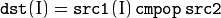
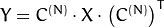
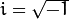
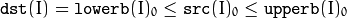
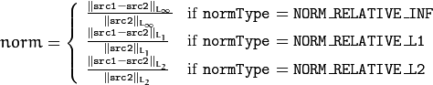
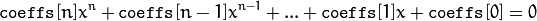

Operations on Arrays¶
abs¶
Calculates an absolute value of each matrix element.
- C++: MatExpr abs(const Mat& m)¶
- C++: MatExpr abs(const MatExpr& e)¶
Parameters: - m – matrix.
- e – matrix expression.
abs is a meta-function that is expanded to one of absdiff() or convertScaleAbs() forms:
- C = abs(A-B) is equivalent to absdiff(A, B, C)
- C = abs(A) is equivalent to absdiff(A, Scalar::all(0), C)
- C = Mat_<Vec<uchar,n> >(abs(A*alpha + beta)) is equivalent to convertScaleAbs(A, C, alpha, beta)
The output matrix has the same size and the same type as the input one except for the last case, where C is depth=CV_8U .
See also
absdiff¶
Calculates the per-element absolute difference between two arrays or between an array and a scalar.
- C++: void absdiff(InputArray src1, InputArray src2, OutputArray dst)¶
- Python: cv2.absdiff(src1, src2[, dst]) → dst¶
- C: void cvAbsDiff(const CvArr* src1, const CvArr* src2, CvArr* dst)¶
- C: void cvAbsDiffS(const CvArr* src, CvArr* dst, CvScalar value)¶
- Python: cv.AbsDiff(src1, src2, dst) → None¶
- Python: cv.AbsDiffS(src, dst, value) → None¶
Parameters: - src1 – first input array or a scalar.
- src2 – second input array or a scalar.
- src – single input array.
- value – scalar value.
- dst – output array that has the same size and type as input arrays.
The function absdiff calculates:
Absolute difference between two arrays when they have the same size and type:
Absolute difference between an array and a scalar when the second array is constructed from Scalar or has as many elements as the number of channels in src1:
Absolute difference between a scalar and an array when the first array is constructed from Scalar or has as many elements as the number of channels in src2:
where I is a multi-dimensional index of array elements. In case of multi-channel arrays, each channel is processed independently.
Note
Saturation is not applied when the arrays have the depth CV_32S. You may even get a negative value in the case of overflow.
See also
add¶
Calculates the per-element sum of two arrays or an array and a scalar.
- C++: void add(InputArray src1, InputArray src2, OutputArray dst, InputArray mask=noArray(), int dtype=-1)¶
- Python: cv2.add(src1, src2[, dst[, mask[, dtype]]]) → dst¶
- C: void cvAdd(const CvArr* src1, const CvArr* src2, CvArr* dst, const CvArr* mask=NULL)¶
- C: void cvAddS(const CvArr* src, CvScalar value, CvArr* dst, const CvArr* mask=NULL)¶
- Python: cv.Add(src1, src2, dst, mask=None) → None¶
- Python: cv.AddS(src, value, dst, mask=None) → None¶
Parameters: - src1 – first input array or a scalar.
- src2 – second input array or a scalar.
- src – single input array.
- value – scalar value.
- dst – output array that has the same size and number of channels as the input array(s); the depth is defined by dtype or src1/src2.
- mask – optional operation mask - 8-bit single channel array, that specifies elements of the output array to be changed.
- dtype – optional depth of the output array (see the discussion below).
The function add calculates:
Sum of two arrays when both input arrays have the same size and the same number of channels:
Sum of an array and a scalar when src2 is constructed from Scalar or has the same number of elements as src1.channels():
Sum of a scalar and an array when src1 is constructed from Scalar or has the same number of elements as src2.channels():
where I is a multi-dimensional index of array elements. In case of multi-channel arrays, each channel is processed independently.
The first function in the list above can be replaced with matrix expressions:
dst = src1 + src2;
dst += src1; // equivalent to add(dst, src1, dst);
The input arrays and the output array can all have the same or different depths. For example, you can add a 16-bit unsigned array to a 8-bit signed array and store the sum as a 32-bit floating-point array. Depth of the output array is determined by the dtype parameter. In the second and third cases above, as well as in the first case, when src1.depth() == src2.depth(), dtype can be set to the default -1. In this case, the output array will have the same depth as the input array, be it src1, src2 or both.
Note
Saturation is not applied when the output array has the depth CV_32S. You may even get result of an incorrect sign in the case of overflow.
See also
subtract(), addWeighted(), scaleAdd(), Mat::convertTo(), Matrix Expressions
addWeighted¶
Calculates the weighted sum of two arrays.
- C++: void addWeighted(InputArray src1, double alpha, InputArray src2, double beta, double gamma, OutputArray dst, int dtype=-1)¶
- Python: cv2.addWeighted(src1, alpha, src2, beta, gamma[, dst[, dtype]]) → dst¶
- C: void cvAddWeighted(const CvArr* src1, double alpha, const CvArr* src2, double beta, double gamma, CvArr* dst)¶
- Python: cv.AddWeighted(src1, alpha, src2, beta, gamma, dst) → None¶
Parameters: - src1 – first input array.
- alpha – weight of the first array elements.
- src2 – second input array of the same size and channel number as src1.
- beta – weight of the second array elements.
- dst – output array that has the same size and number of channels as the input arrays.
- gamma – scalar added to each sum.
- dtype – optional depth of the output array; when both input arrays have the same depth, dtype can be set to -1, which will be equivalent to src1.depth().
The function addWeighted calculates the weighted sum of two arrays as follows:
where I is a multi-dimensional index of array elements. In case of multi-channel arrays, each channel is processed independently.
The function can be replaced with a matrix expression:
dst = src1*alpha + src2*beta + gamma;
Note
Saturation is not applied when the output array has the depth CV_32S. You may even get result of an incorrect sign in the case of overflow.
See also
add(), subtract(), scaleAdd(), Mat::convertTo(), Matrix Expressions
bitwise_and¶
Calculates the per-element bit-wise conjunction of two arrays or an array and a scalar.
- C++: void bitwise_and(InputArray src1, InputArray src2, OutputArray dst, InputArray mask=noArray())¶
- Python: cv2.bitwise_and(src1, src2[, dst[, mask]]) → dst¶
- C: void cvAnd(const CvArr* src1, const CvArr* src2, CvArr* dst, const CvArr* mask=NULL)¶
- C: void cvAndS(const CvArr* src, CvScalar value, CvArr* dst, const CvArr* mask=NULL)¶
- Python: cv.And(src1, src2, dst, mask=None) → None¶
- Python: cv.AndS(src, value, dst, mask=None) → None¶
Parameters: - src1 – first input array or a scalar.
- src2 – second input array or a scalar.
- src – single input array.
- value – scalar value.
- dst – output array that has the same size and type as the input arrays.
- mask – optional operation mask, 8-bit single channel array, that specifies elements of the output array to be changed.
The function calculates the per-element bit-wise logical conjunction for:
Two arrays when src1 and src2 have the same size:
An array and a scalar when src2 is constructed from Scalar or has the same number of elements as src1.channels():
A scalar and an array when src1 is constructed from Scalar or has the same number of elements as src2.channels():
In case of floating-point arrays, their machine-specific bit representations (usually IEEE754-compliant) are used for the operation. In case of multi-channel arrays, each channel is processed independently. In the second and third cases above, the scalar is first converted to the array type.
bitwise_not¶
Inverts every bit of an array.
- C++: void bitwise_not(InputArray src, OutputArray dst, InputArray mask=noArray())¶
- Python: cv2.bitwise_not(src[, dst[, mask]]) → dst¶
- C: void cvNot(const CvArr* src, CvArr* dst)¶
- Python: cv.Not(src, dst) → None¶
Parameters: - src – input array.
- dst – output array that has the same size and type as the input array.
- mask – optional operation mask, 8-bit single channel array, that specifies elements of the output array to be changed.
The function calculates per-element bit-wise inversion of the input array:
In case of a floating-point input array, its machine-specific bit representation (usually IEEE754-compliant) is used for the operation. In case of multi-channel arrays, each channel is processed independently.
bitwise_or¶
Calculates the per-element bit-wise disjunction of two arrays or an array and a scalar.
- C++: void bitwise_or(InputArray src1, InputArray src2, OutputArray dst, InputArray mask=noArray())¶
- Python: cv2.bitwise_or(src1, src2[, dst[, mask]]) → dst¶
- C: void cvOr(const CvArr* src1, const CvArr* src2, CvArr* dst, const CvArr* mask=NULL)¶
- C: void cvOrS(const CvArr* src, CvScalar value, CvArr* dst, const CvArr* mask=NULL)¶
- Python: cv.Or(src1, src2, dst, mask=None) → None¶
- Python: cv.OrS(src, value, dst, mask=None) → None¶
Parameters: - src1 – first input array or a scalar.
- src2 – second input array or a scalar.
- src – single input array.
- value – scalar value.
- dst – output array that has the same size and type as the input arrays.
- mask – optional operation mask, 8-bit single channel array, that specifies elements of the output array to be changed.
The function calculates the per-element bit-wise logical disjunction for:
Two arrays when src1 and src2 have the same size:
An array and a scalar when src2 is constructed from Scalar or has the same number of elements as src1.channels():
A scalar and an array when src1 is constructed from Scalar or has the same number of elements as src2.channels():
In case of floating-point arrays, their machine-specific bit representations (usually IEEE754-compliant) are used for the operation. In case of multi-channel arrays, each channel is processed independently. In the second and third cases above, the scalar is first converted to the array type.
bitwise_xor¶
Calculates the per-element bit-wise “exclusive or” operation on two arrays or an array and a scalar.
- C++: void bitwise_xor(InputArray src1, InputArray src2, OutputArray dst, InputArray mask=noArray())¶
- Python: cv2.bitwise_xor(src1, src2[, dst[, mask]]) → dst¶
- C: void cvXor(const CvArr* src1, const CvArr* src2, CvArr* dst, const CvArr* mask=NULL)¶
- C: void cvXorS(const CvArr* src, CvScalar value, CvArr* dst, const CvArr* mask=NULL)¶
- Python: cv.Xor(src1, src2, dst, mask=None) → None¶
- Python: cv.XorS(src, value, dst, mask=None) → None¶
Parameters: - src1 – first input array or a scalar.
- src2 – second input array or a scalar.
- src – single input array.
- value – scalar value.
- dst – output array that has the same size and type as the input arrays.
- mask – optional operation mask, 8-bit single channel array, that specifies elements of the output array to be changed.
The function calculates the per-element bit-wise logical “exclusive-or” operation for:
Two arrays when src1 and src2 have the same size:
An array and a scalar when src2 is constructed from Scalar or has the same number of elements as src1.channels():
A scalar and an array when src1 is constructed from Scalar or has the same number of elements as src2.channels():
In case of floating-point arrays, their machine-specific bit representations (usually IEEE754-compliant) are used for the operation. In case of multi-channel arrays, each channel is processed independently. In the 2nd and 3rd cases above, the scalar is first converted to the array type.
calcCovarMatrix¶
Calculates the covariance matrix of a set of vectors.
- C++: void calcCovarMatrix(const Mat* samples, int nsamples, Mat& covar, Mat& mean, int flags, int ctype=CV_64F)¶
- C++: void calcCovarMatrix(InputArray samples, OutputArray covar, OutputArray mean, int flags, int ctype=CV_64F)¶
- Python: cv2.calcCovarMatrix(samples, flags[, covar[, mean[, ctype]]]) → covar, mean¶
- C: void cvCalcCovarMatrix(const CvArr** vects, int count, CvArr* cov_mat, CvArr* avg, int flags)¶
- Python: cv.CalcCovarMatrix(vects, covMat, avg, flags) → None¶
Parameters: - samples – samples stored either as separate matrices or as rows/columns of a single matrix.
- nsamples – number of samples when they are stored separately.
- covar – output covariance matrix of the type ctype and square size.
- ctype – type of the matrixl; it equals ‘CV_64F’ by default.
- mean – input or output (depending on the flags) array as the average value of the input vectors.
- vects – a set of vectors.
- flags –
operation flags as a combination of the following values:
- CV_COVAR_SCRAMBLED The output covariance matrix is calculated as:
![\texttt{scale} \cdot [ \texttt{vects} [0]- \texttt{mean} , \texttt{vects} [1]- \texttt{mean} ,...]^T \cdot [ \texttt{vects} [0]- \texttt{mean} , \texttt{vects} [1]- \texttt{mean} ,...],](../../../_images/math/3682242154dbbc0cbc9af33ce8ec3c5d09ce0035.png)
The covariance matrix will be nsamples x nsamples. Such an unusual covariance matrix is used for fast PCA of a set of very large vectors (see, for example, the EigenFaces technique for face recognition). Eigenvalues of this “scrambled” matrix match the eigenvalues of the true covariance matrix. The “true” eigenvectors can be easily calculated from the eigenvectors of the “scrambled” covariance matrix.
- CV_COVAR_NORMAL The output covariance matrix is calculated as:
covar will be a square matrix of the same size as the total number of elements in each input vector. One and only one of CV_COVAR_SCRAMBLED and CV_COVAR_NORMAL must be specified.
- CV_COVAR_USE_AVG If the flag is specified, the function does not calculate mean from the input vectors but, instead, uses the passed mean vector. This is useful if mean has been pre-calculated or known in advance, or if the covariance matrix is calculated by parts. In this case, mean is not a mean vector of the input sub-set of vectors but rather the mean vector of the whole set.
- CV_COVAR_SCALE If the flag is specified, the covariance matrix is scaled. In the “normal” mode, scale is 1./nsamples . In the “scrambled” mode, scale is the reciprocal of the total number of elements in each input vector. By default (if the flag is not specified), the covariance matrix is not scaled ( scale=1 ).
- CV_COVAR_ROWS [Only useful in the second variant of the function] If the flag is specified, all the input vectors are stored as rows of the samples matrix. mean should be a single-row vector in this case.
- CV_COVAR_COLS [Only useful in the second variant of the function] If the flag is specified, all the input vectors are stored as columns of the samples matrix. mean should be a single-column vector in this case.
- CV_COVAR_SCRAMBLED The output covariance matrix is calculated as:
The functions calcCovarMatrix calculate the covariance matrix and, optionally, the mean vector of the set of input vectors.
See also
cartToPolar¶
Calculates the magnitude and angle of 2D vectors.
- C++: void cartToPolar(InputArray x, InputArray y, OutputArray magnitude, OutputArray angle, bool angleInDegrees=false)¶
- Python: cv2.cartToPolar(x, y[, magnitude[, angle[, angleInDegrees]]]) → magnitude, angle¶
- C: void cvCartToPolar(const CvArr* x, const CvArr* y, CvArr* magnitude, CvArr* angle=NULL, int angle_in_degrees=0 )¶
- Python: cv.CartToPolar(x, y, magnitude, angle=None, angleInDegrees=0) → None¶
Parameters: - x – array of x-coordinates; this must be a single-precision or double-precision floating-point array.
- y – array of y-coordinates, that must have the same size and same type as x.
- magnitude – output array of magnitudes of the same size and type as x.
- angle – output array of angles that has the same size and type as x; the angles are measured in radians (from 0 to 2*Pi) or in degrees (0 to 360 degrees).
- angleInDegrees – a flag, indicating whether the angles are measured in radians (which is by default), or in degrees.
- angle_in_degrees – a flag, indicating whether the angles are measured in radians, or in degrees (specific to C syntax).
The function cartToPolar calculates either the magnitude, angle, or both for every 2D vector (x(I),y(I)):
The angles are calculated with accuracy about 0.3 degrees. For the point (0,0), the angle is set to 0.
checkRange¶
Checks every element of an input array for invalid values.
- C++: bool checkRange(InputArray a, bool quiet=true, Point* pos=0, double minVal=-DBL_MAX, double maxVal=DBL_MAX )¶
- Python: cv2.checkRange(a[, quiet[, minVal[, maxVal]]]) → retval, pos¶
Parameters: - a – input array.
- quiet – a flag, indicating whether the functions quietly return false when the array elements are out of range or they throw an exception.
- pos – optional output parameter, where the position of the first outlier is stored; in the second function pos, when not NULL, must be a pointer to array of src.dims elements.
- minVal – inclusive lower boundary of valid values range.
- maxVal – exclusive upper boundary of valid values range.
The functions checkRange check that every array element is neither NaN nor infinite. When minVal < -DBL_MAX and maxVal < DBL_MAX, the functions also check that each value is between minVal and maxVal. In case of multi-channel arrays, each channel is processed independently. If some values are out of range, position of the first outlier is stored in pos (when pos != NULL). Then, the functions either return false (when quiet=true) or throw an exception.
compare¶
Performs the per-element comparison of two arrays or an array and scalar value.
- C++: void compare(InputArray src1, InputArray src2, OutputArray dst, int cmpop)¶
- Python: cv2.compare(src1, src2, cmpop[, dst]) → dst¶
- C: void cvCmp(const CvArr* src1, const CvArr* src2, CvArr* dst, int cmp_op)¶
- Python: cv.Cmp(src1, src2, dst, cmpOp) → None¶
- C: void cvCmpS(const CvArr* src, double value, CvArr* dst, int cmp_op)¶
- Python: cv.CmpS(src, value, dst, cmpOp) → None¶
Parameters: - src1 – first input array or a scalar (in the case of cvCmp, cv.Cmp, cvCmpS, cv.CmpS it is always an array); when it is an array, it must have a single channel.
- src2 – second input array or a scalar (in the case of cvCmp and cv.Cmp it is always an array; in the case of cvCmpS, cv.CmpS it is always a scalar); when it is an array, it must have a single channel.
- src – single input array.
- value – scalar value.
- dst – output array that has the same size and type as the input arrays.
- cmpop –
a flag, that specifies correspondence between the arrays:
- CMP_EQ src1 is equal to src2.
- CMP_GT src1 is greater than src2.
- CMP_GE src1 is greater than or equal to src2.
- CMP_LT src1 is less than src2.
- CMP_LE src1 is less than or equal to src2.
- CMP_NE src1 is unequal to src2.
The function compares:
Elements of two arrays when src1 and src2 have the same size:
Elements of src1 with a scalar src2 when src2 is constructed from Scalar or has a single element:

src1 with elements of src2 when src1 is constructed from Scalar or has a single element:
When the comparison result is true, the corresponding element of output array is set to 255. The comparison operations can be replaced with the equivalent matrix expressions:
Mat dst1 = src1 >= src2;
Mat dst2 = src1 < 8;
...
See also
completeSymm¶
Copies the lower or the upper half of a square matrix to another half.
- C++: void completeSymm(InputOutputArray mtx, bool lowerToUpper=false)¶
- Python: cv2.completeSymm(mtx[, lowerToUpper]) → None¶
Parameters: - mtx – input-output floating-point square matrix.
- lowerToUpper – operation flag; if true, the lower half is copied to the upper half. Otherwise, the upper half is copied to the lower half.
The function completeSymm copies the lower half of a square matrix to its another half. The matrix diagonal remains unchanged:
- for if lowerToUpper=false
- for if lowerToUpper=true
See also
convertScaleAbs¶
Scales, calculates absolute values, and converts the result to 8-bit.
- C++: void convertScaleAbs(InputArray src, OutputArray dst, double alpha=1, double beta=0)¶
- Python: cv2.convertScaleAbs(src[, dst[, alpha[, beta]]]) → dst¶
- C: void cvConvertScaleAbs(const CvArr* src, CvArr* dst, double scale=1, double shift=0)¶
- Python: cv.ConvertScaleAbs(src, dst, scale=1.0, shift=0.0) → None¶
Parameters: - src – input array.
- dst – output array.
- alpha – optional scale factor.
- beta – optional delta added to the scaled values.
On each element of the input array, the function convertScaleAbs performs three operations sequentially: scaling, taking an absolute value, conversion to an unsigned 8-bit type:
In case of multi-channel arrays, the function processes each channel independently. When the output is not 8-bit, the operation can be emulated by calling the Mat::convertTo method (or by using matrix expressions) and then by calculating an absolute value of the result. For example:
Mat_<float> A(30,30);
randu(A, Scalar(-100), Scalar(100));
Mat_<float> B = A*5 + 3;
B = abs(B);
// Mat_<float> B = abs(A*5+3) will also do the job,
// but it will allocate a temporary matrix
See also
countNonZero¶
Counts non-zero array elements.
- C++: int countNonZero(InputArray src)¶
- Python: cv2.countNonZero(src) → retval¶
- C: int cvCountNonZero(const CvArr* arr)¶
- Python: cv.CountNonZero(arr) → int¶
Parameters: src – single-channel array.
The function returns the number of non-zero elements in src :
See also
mean(), meanStdDev(), norm(), minMaxLoc(), calcCovarMatrix()
cvarrToMat¶
Converts CvMat, IplImage , or CvMatND to Mat.
- C++: Mat cvarrToMat(const CvArr* arr, bool copyData=false, bool allowND=true, int coiMode=0 )¶
Parameters: - arr – input CvMat, IplImage , or CvMatND.
- copyData – when false (default value), no data is copied and only the new header is created, in this case, the original array should not be deallocated while the new matrix header is used; if the parameter is true, all the data is copied and you may deallocate the original array right after the conversion.
- allowND – when true (default value), CvMatND is converted to 2-dimensional Mat, if it is possible (see the discussion below); if it is not possible, or when the parameter is false, the function will report an error.
- coiMode –
parameter specifying how the IplImage COI (when set) is handled.
- If coiMode=0 and COI is set, the function reports an error.
- If coiMode=1 , the function never reports an error. Instead, it returns the header to the whole original image and you will have to check and process COI manually. See extractImageCOI() .
The function cvarrToMat converts CvMat, IplImage , or CvMatND header to Mat header, and optionally duplicates the underlying data. The constructed header is returned by the function.
When copyData=false , the conversion is done really fast (in O(1) time) and the newly created matrix header will have refcount=0 , which means that no reference counting is done for the matrix data. In this case, you have to preserve the data until the new header is destructed. Otherwise, when copyData=true , the new buffer is allocated and managed as if you created a new matrix from scratch and copied the data there. That is, cvarrToMat(arr, true) is equivalent to cvarrToMat(arr, false).clone() (assuming that COI is not set). The function provides a uniform way of supporting CvArr paradigm in the code that is migrated to use new-style data structures internally. The reverse transformation, from Mat to CvMat or IplImage can be done by a simple assignment:
CvMat* A = cvCreateMat(10, 10, CV_32F);
cvSetIdentity(A);
IplImage A1; cvGetImage(A, &A1);
Mat B = cvarrToMat(A);
Mat B1 = cvarrToMat(&A1);
IplImage C = B;
CvMat C1 = B1;
// now A, A1, B, B1, C and C1 are different headers
// for the same 10x10 floating-point array.
// note that you will need to use "&"
// to pass C & C1 to OpenCV functions, for example:
printf("%g\n", cvNorm(&C1, 0, CV_L2));
Normally, the function is used to convert an old-style 2D array ( CvMat or IplImage ) to Mat . However, the function can also take CvMatND as an input and create Mat() for it, if it is possible. And, for CvMatND A , it is possible if and only if A.dim[i].size*A.dim.step[i] == A.dim.step[i-1] for all or for all but one i, 0 < i < A.dims . That is, the matrix data should be continuous or it should be representable as a sequence of continuous matrices. By using this function in this way, you can process CvMatND using an arbitrary element-wise function.
The last parameter, coiMode , specifies how to deal with an image with COI set. By default, it is 0 and the function reports an error when an image with COI comes in. And coiMode=1 means that no error is signalled. You have to check COI presence and handle it manually. The modern structures, such as Mat and MatND do not support COI natively. To process an individual channel of a new-style array, you need either to organize a loop over the array (for example, using matrix iterators) where the channel of interest will be processed, or extract the COI using mixChannels() (for new-style arrays) or extractImageCOI() (for old-style arrays), process this individual channel, and insert it back to the output array if needed (using mixChannels() or insertImageCOI() , respectively).
See also
cvGetImage(), cvGetMat(), extractImageCOI(), insertImageCOI(), mixChannels()
dct¶
Performs a forward or inverse discrete Cosine transform of 1D or 2D array.
- C++: void dct(InputArray src, OutputArray dst, int flags=0)¶
- Python: cv2.dct(src[, dst[, flags]]) → dst¶
- C: void cvDCT(const CvArr* src, CvArr* dst, int flags)¶
- Python: cv.DCT(src, dst, flags) → None¶
Parameters: - src – input floating-point array.
- dst – output array of the same size and type as src .
- flags –
transformation flags as a combination of the following values:
- DCT_INVERSE performs an inverse 1D or 2D transform instead of the default forward transform.
- DCT_ROWS performs a forward or inverse transform of every individual row of the input matrix. This flag enables you to transform multiple vectors simultaneously and can be used to decrease the overhead (which is sometimes several times larger than the processing itself) to perform 3D and higher-dimensional transforms and so forth.
The function dct performs a forward or inverse discrete Cosine transform (DCT) of a 1D or 2D floating-point array:
Forward Cosine transform of a 1D vector of N elements:
where
and
, for j > 0.
Inverse Cosine transform of a 1D vector of N elements:
(since is an orthogonal matrix, )
Forward 2D Cosine transform of M x N matrix:

Inverse 2D Cosine transform of M x N matrix:
The function chooses the mode of operation by looking at the flags and size of the input array:
- If (flags & DCT_INVERSE) == 0 , the function does a forward 1D or 2D transform. Otherwise, it is an inverse 1D or 2D transform.
- If (flags & DCT_ROWS) != 0 , the function performs a 1D transform of each row.
- If the array is a single column or a single row, the function performs a 1D transform.
- If none of the above is true, the function performs a 2D transform.
Note
Currently dct supports even-size arrays (2, 4, 6 ...). For data analysis and approximation, you can pad the array when necessary.
Also, the function performance depends very much, and not monotonically, on the array size (see getOptimalDFTSize() ). In the current implementation DCT of a vector of size N is calculated via DFT of a vector of size N/2 . Thus, the optimal DCT size N1 >= N can be calculated as:
size_t getOptimalDCTSize(size_t N) { return 2*getOptimalDFTSize((N+1)/2); }
N1 = getOptimalDCTSize(N);
See also
dft¶
Performs a forward or inverse Discrete Fourier transform of a 1D or 2D floating-point array.
- C++: void dft(InputArray src, OutputArray dst, int flags=0, int nonzeroRows=0)¶
- Python: cv2.dft(src[, dst[, flags[, nonzeroRows]]]) → dst¶
- C: void cvDFT(const CvArr* src, CvArr* dst, int flags, int nonzero_rows=0 )¶
- Python: cv.DFT(src, dst, flags, nonzeroRows=0) → None¶
Parameters: - src – input array that could be real or complex.
- dst – output array whose size and type depends on the flags .
- flags –
transformation flags, representing a combination of the following values:
- DFT_INVERSE performs an inverse 1D or 2D transform instead of the default forward transform.
- DFT_SCALE scales the result: divide it by the number of array elements. Normally, it is combined with DFT_INVERSE.
- DFT_ROWS performs a forward or inverse transform of every individual row of the input matrix; this flag enables you to transform multiple vectors simultaneously and can be used to decrease the overhead (which is sometimes several times larger than the processing itself) to perform 3D and higher-dimensional transformations and so forth.
- DFT_COMPLEX_OUTPUT performs a forward transformation of 1D or 2D real array; the result, though being a complex array, has complex-conjugate symmetry (CCS, see the function description below for details), and such an array can be packed into a real array of the same size as input, which is the fastest option and which is what the function does by default; however, you may wish to get a full complex array (for simpler spectrum analysis, and so on) - pass the flag to enable the function to produce a full-size complex output array.
- DFT_REAL_OUTPUT performs an inverse transformation of a 1D or 2D complex array; the result is normally a complex array of the same size, however, if the input array has conjugate-complex symmetry (for example, it is a result of forward transformation with DFT_COMPLEX_OUTPUT flag), the output is a real array; while the function itself does not check whether the input is symmetrical or not, you can pass the flag and then the function will assume the symmetry and produce the real output array (note that when the input is packed into a real array and inverse transformation is executed, the function treats the input as a packed complex-conjugate symmetrical array, and the output will also be a real array).
- nonzeroRows – when the parameter is not zero, the function assumes that only the first nonzeroRows rows of the input array (DFT_INVERSE is not set) or only the first nonzeroRows of the output array (DFT_INVERSE is set) contain non-zeros, thus, the function can handle the rest of the rows more efficiently and save some time; this technique is very useful for calculating array cross-correlation or convolution using DFT.
The function performs one of the following:
Forward the Fourier transform of a 1D vector of N elements:
where and 
Inverse the Fourier transform of a 1D vector of N elements:
where
Forward the 2D Fourier transform of a M x N matrix:
Inverse the 2D Fourier transform of a M x N matrix:
In case of real (single-channel) data, the output spectrum of the forward Fourier transform or input spectrum of the inverse Fourier transform can be represented in a packed format called CCS (complex-conjugate-symmetrical). It was borrowed from IPL (Intel* Image Processing Library). Here is how 2D CCS spectrum looks:
![\begin{bmatrix} Re Y_{0,0} & Re Y_{0,1} & Im Y_{0,1} & Re Y_{0,2} & Im Y_{0,2} & \cdots & Re Y_{0,N/2-1} & Im Y_{0,N/2-1} & Re Y_{0,N/2} \\ Re Y_{1,0} & Re Y_{1,1} & Im Y_{1,1} & Re Y_{1,2} & Im Y_{1,2} & \cdots & Re Y_{1,N/2-1} & Im Y_{1,N/2-1} & Re Y_{1,N/2} \\ Im Y_{1,0} & Re Y_{2,1} & Im Y_{2,1} & Re Y_{2,2} & Im Y_{2,2} & \cdots & Re Y_{2,N/2-1} & Im Y_{2,N/2-1} & Im Y_{1,N/2} \\ \hdotsfor{9} \\ Re Y_{M/2-1,0} & Re Y_{M-3,1} & Im Y_{M-3,1} & \hdotsfor{3} & Re Y_{M-3,N/2-1} & Im Y_{M-3,N/2-1}& Re Y_{M/2-1,N/2} \\ Im Y_{M/2-1,0} & Re Y_{M-2,1} & Im Y_{M-2,1} & \hdotsfor{3} & Re Y_{M-2,N/2-1} & Im Y_{M-2,N/2-1}& Im Y_{M/2-1,N/2} \\ Re Y_{M/2,0} & Re Y_{M-1,1} & Im Y_{M-1,1} & \hdotsfor{3} & Re Y_{M-1,N/2-1} & Im Y_{M-1,N/2-1}& Re Y_{M/2,N/2} \end{bmatrix}](../../../_images/math/58ca3a644fb9956e8f953c8f9cc56891cea21ece.png)
In case of 1D transform of a real vector, the output looks like the first row of the matrix above.
So, the function chooses an operation mode depending on the flags and size of the input array:
If DFT_ROWS is set or the input array has a single row or single column, the function performs a 1D forward or inverse transform of each row of a matrix when DFT_ROWS is set. Otherwise, it performs a 2D transform.
If the input array is real and DFT_INVERSE is not set, the function performs a forward 1D or 2D transform:
- When DFT_COMPLEX_OUTPUT is set, the output is a complex matrix of the same size as input.
- When DFT_COMPLEX_OUTPUT is not set, the output is a real matrix of the same size as input. In case of 2D transform, it uses the packed format as shown above. In case of a single 1D transform, it looks like the first row of the matrix above. In case of multiple 1D transforms (when using the DFT_ROWS flag), each row of the output matrix looks like the first row of the matrix above.
If the input array is complex and either DFT_INVERSE or DFT_REAL_OUTPUT are not set, the output is a complex array of the same size as input. The function performs a forward or inverse 1D or 2D transform of the whole input array or each row of the input array independently, depending on the flags DFT_INVERSE and DFT_ROWS.
When DFT_INVERSE is set and the input array is real, or it is complex but DFT_REAL_OUTPUT is set, the output is a real array of the same size as input. The function performs a 1D or 2D inverse transformation of the whole input array or each individual row, depending on the flags DFT_INVERSE and DFT_ROWS.
If DFT_SCALE is set, the scaling is done after the transformation.
Unlike dct() , the function supports arrays of arbitrary size. But only those arrays are processed efficiently, whose sizes can be factorized in a product of small prime numbers (2, 3, and 5 in the current implementation). Such an efficient DFT size can be calculated using the getOptimalDFTSize() method.
The sample below illustrates how to calculate a DFT-based convolution of two 2D real arrays:
void convolveDFT(InputArray A, InputArray B, OutputArray C)
{
// reallocate the output array if needed
C.create(abs(A.rows - B.rows)+1, abs(A.cols - B.cols)+1, A.type());
Size dftSize;
// calculate the size of DFT transform
dftSize.width = getOptimalDFTSize(A.cols + B.cols - 1);
dftSize.height = getOptimalDFTSize(A.rows + B.rows - 1);
// allocate temporary buffers and initialize them with 0's
Mat tempA(dftSize, A.type(), Scalar::all(0));
Mat tempB(dftSize, B.type(), Scalar::all(0));
// copy A and B to the top-left corners of tempA and tempB, respectively
Mat roiA(tempA, Rect(0,0,A.cols,A.rows));
A.copyTo(roiA);
Mat roiB(tempB, Rect(0,0,B.cols,B.rows));
B.copyTo(roiB);
// now transform the padded A & B in-place;
// use "nonzeroRows" hint for faster processing
dft(tempA, tempA, 0, A.rows);
dft(tempB, tempB, 0, B.rows);
// multiply the spectrums;
// the function handles packed spectrum representations well
mulSpectrums(tempA, tempB, tempA);
// transform the product back from the frequency domain.
// Even though all the result rows will be non-zero,
// you need only the first C.rows of them, and thus you
// pass nonzeroRows == C.rows
dft(tempA, tempA, DFT_INVERSE + DFT_SCALE, C.rows);
// now copy the result back to C.
tempA(Rect(0, 0, C.cols, C.rows)).copyTo(C);
// all the temporary buffers will be deallocated automatically
}
To optimize this sample, consider the following approaches:
- Since nonzeroRows != 0 is passed to the forward transform calls and since A and B are copied to the top-left corners of tempA and tempB, respectively, it is not necessary to clear the whole tempA and tempB. It is only necessary to clear the tempA.cols - A.cols ( tempB.cols - B.cols) rightmost columns of the matrices.
- This DFT-based convolution does not have to be applied to the whole big arrays, especially if B is significantly smaller than A or vice versa. Instead, you can calculate convolution by parts. To do this, you need to split the output array C into multiple tiles. For each tile, estimate which parts of A and B are required to calculate convolution in this tile. If the tiles in C are too small, the speed will decrease a lot because of repeated work. In the ultimate case, when each tile in C is a single pixel, the algorithm becomes equivalent to the naive convolution algorithm. If the tiles are too big, the temporary arrays tempA and tempB become too big and there is also a slowdown because of bad cache locality. So, there is an optimal tile size somewhere in the middle.
- If different tiles in C can be calculated in parallel and, thus, the convolution is done by parts, the loop can be threaded.
All of the above improvements have been implemented in matchTemplate() and filter2D() . Therefore, by using them, you can get the performance even better than with the above theoretically optimal implementation. Though, those two functions actually calculate cross-correlation, not convolution, so you need to “flip” the second convolution operand B vertically and horizontally using flip() .
See also
dct() , getOptimalDFTSize() , mulSpectrums(), filter2D() , matchTemplate() , flip() , cartToPolar() , magnitude() , phase()
Note
- An example using the discrete fourier transform can be found at opencv_source_code/samples/cpp/dft.cpp
- (Python) An example using the dft functionality to perform Wiener deconvolution can be found at opencv_source/samples/python2/deconvolution.py
- (Python) An example rearranging the quadrants of a Fourier image can be found at opencv_source/samples/python2/dft.py
divide¶
Performs per-element division of two arrays or a scalar by an array.
- C++: void divide(InputArray src1, InputArray src2, OutputArray dst, double scale=1, int dtype=-1)¶
- C++: void divide(double scale, InputArray src2, OutputArray dst, int dtype=-1)¶
- Python: cv2.divide(src1, src2[, dst[, scale[, dtype]]]) → dst¶
- Python: cv2.divide(scale, src2[, dst[, dtype]]) → dst
- C: void cvDiv(const CvArr* src1, const CvArr* src2, CvArr* dst, double scale=1)¶
- Python: cv.Div(src1, src2, dst, scale=1) → None¶
Parameters: - src1 – first input array.
- src2 – second input array of the same size and type as src1.
- scale – scalar factor.
- dst – output array of the same size and type as src2.
- dtype – optional depth of the output array; if -1, dst will have depth src2.depth(), but in case of an array-by-array division, you can only pass -1 when src1.depth()==src2.depth().
The functions divide divide one array by another:
or a scalar by an array when there is no src1 :
When src2(I) is zero, dst(I) will also be zero. Different channels of multi-channel arrays are processed independently.
Note
Saturation is not applied when the output array has the depth CV_32S. You may even get result of an incorrect sign in the case of overflow.
See also
determinant¶
Returns the determinant of a square floating-point matrix.
- C++: double determinant(InputArray mtx)¶
- Python: cv2.determinant(mtx) → retval¶
- C: double cvDet(const CvArr* mat)¶
- Python: cv.Det(mat) → float¶
Parameters: - mtx – input matrix that must have CV_32FC1 or CV_64FC1 type and square size.
- mat – input matrix that must have CV_32FC1 or CV_64FC1 type and square size.
The function determinant calculates and returns the determinant of the specified matrix. For small matrices ( mtx.cols=mtx.rows<=3 ), the direct method is used. For larger matrices, the function uses LU factorization with partial pivoting.
For symmetric positively-determined matrices, it is also possible to use eigen() decomposition to calculate the determinant.
See also
eigen¶
Calculates eigenvalues and eigenvectors of a symmetric matrix.
- C++: bool eigen(InputArray src, OutputArray eigenvalues, int lowindex=-1, int highindex=-1)¶
- C++: bool eigen(InputArray src, OutputArray eigenvalues, OutputArray eigenvectors, int lowindex=-1, int highindex=-1)¶
- Python: cv2.eigen(src, computeEigenvectors[, eigenvalues[, eigenvectors]]) → retval, eigenvalues, eigenvectors¶
- C: void cvEigenVV(CvArr* mat, CvArr* evects, CvArr* evals, double eps=0, int lowindex=-1, int highindex=-1 )¶
- Python: cv.EigenVV(mat, evects, evals, eps, lowindex=-1, highindex=-1) → None¶
Parameters: - src – input matrix that must have CV_32FC1 or CV_64FC1 type, square size and be symmetrical (src T == src).
- eigenvalues – output vector of eigenvalues of the same type as src; the eigenvalues are stored in the descending order.
- eigenvectors – output matrix of eigenvectors; it has the same size and type as src; the eigenvectors are stored as subsequent matrix rows, in the same order as the corresponding eigenvalues.
- lowindex – optional index of largest eigenvalue/-vector to calculate; the parameter is ignored in the current implementation.
- highindex – optional index of smallest eigenvalue/-vector to calculate; the parameter is ignored in the current implementation.
The functions eigen calculate just eigenvalues, or eigenvalues and eigenvectors of the symmetric matrix src :
src*eigenvectors.row(i).t() = eigenvalues.at<srcType>(i)*eigenvectors.row(i).t()
Note
in the new and the old interfaces different ordering of eigenvalues and eigenvectors parameters is used.
See also
exp¶
Calculates the exponent of every array element.
- C++: void exp(InputArray src, OutputArray dst)¶
- Python: cv2.exp(src[, dst]) → dst¶
- C: void cvExp(const CvArr* src, CvArr* dst)¶
- Python: cv.Exp(src, dst) → None¶
Parameters: - src – input array.
- dst – output array of the same size and type as src.
The function exp calculates the exponent of every element of the input array:
The maximum relative error is about 7e-6 for single-precision input and less than 1e-10 for double-precision input. Currently, the function converts denormalized values to zeros on output. Special values (NaN, Inf) are not handled.
See also
log() , cartToPolar() , polarToCart() , phase() , pow() , sqrt() , magnitude()
extractImageCOI¶
Extracts the selected image channel.
- C++: void extractImageCOI(const CvArr* arr, OutputArray coiimg, int coi=-1 )¶
Parameters: - arr – input array; it should be a pointer to CvMat or IplImage.
- coiimg – output array with a single channel and the same size and depth as arr.
- coi – if the parameter is >=0, it specifies the channel to extract, if it is <0 and arr is a pointer to IplImage with a valid COI set, the selected COI is extracted.
The function extractImageCOI is used to extract an image COI from an old-style array and put the result to the new-style C++ matrix. As usual, the output matrix is reallocated using Mat::create if needed.
To extract a channel from a new-style matrix, use mixChannels() or split() .
See also
mixChannels() , split() , merge() , cvarrToMat() , cvSetImageCOI() , cvGetImageCOI()
insertImageCOI¶
Copies the selected image channel from a new-style C++ matrix to the old-style C array.
- C++: void insertImageCOI(InputArray coiimg, CvArr* arr, int coi=-1 )¶
Parameters: - coiimg – input array with a single channel and the same size and depth as arr.
- arr – output array, it should be a pointer to CvMat or IplImage.
- coi – if the parameter is >=0, it specifies the channel to insert, if it is <0 and arr is a pointer to IplImage with a valid COI set, the selected COI is extracted.
The function insertImageCOI is used to extract an image COI from a new-style C++ matrix and put the result to the old-style array.
The sample below illustrates how to use the function:
Mat temp(240, 320, CV_8UC1, Scalar(255));
IplImage* img = cvCreateImage(cvSize(320,240), IPL_DEPTH_8U, 3);
insertImageCOI(temp, img, 1); //insert to the first channel
cvNamedWindow("window",1);
cvShowImage("window", img); //you should see green image, because channel number 1 is green (BGR)
cvWaitKey(0);
cvDestroyAllWindows();
cvReleaseImage(&img);
To insert a channel to a new-style matrix, use merge() .
See also
mixChannels() , split() , merge() , cvarrToMat() , cvSetImageCOI() , cvGetImageCOI()
flip¶
Flips a 2D array around vertical, horizontal, or both axes.
- C++: void flip(InputArray src, OutputArray dst, int flipCode)¶
- Python: cv2.flip(src, flipCode[, dst]) → dst¶
- C: void cvFlip(const CvArr* src, CvArr* dst=NULL, int flip_mode=0 )¶
- Python: cv.Flip(src, dst=None, flipMode=0) → None¶
Parameters: - src – input array.
- dst – output array of the same size and type as src.
- flipCode – a flag to specify how to flip the array; 0 means flipping around the x-axis and positive value (for example, 1) means flipping around y-axis. Negative value (for example, -1) means flipping around both axes (see the discussion below for the formulas).
The function flip flips the array in one of three different ways (row and column indices are 0-based):
The example scenarios of using the function are the following:
- Vertical flipping of the image (flipCode == 0) to switch between top-left and bottom-left image origin. This is a typical operation in video processing on Microsoft Windows* OS.
- Horizontal flipping of the image with the subsequent horizontal shift and absolute difference calculation to check for a vertical-axis symmetry (flipCode > 0).
- Simultaneous horizontal and vertical flipping of the image with the subsequent shift and absolute difference calculation to check for a central symmetry (flipCode < 0).
- Reversing the order of point arrays (flipCode > 0 or flipCode == 0).
See also
gemm¶
Performs generalized matrix multiplication.
- C++: void gemm(InputArray src1, InputArray src2, double alpha, InputArray src3, double gamma, OutputArray dst, int flags=0 )¶
- Python: cv2.gemm(src1, src2, alpha, src3, gamma[, dst[, flags]]) → dst¶
- C: void cvGEMM(const CvArr* src1, const CvArr* src2, double alpha, const CvArr* src3, double beta, CvArr* dst, int tABC=0)¶
- Python: cv.GEMM(src1, src2, alpha, src3, beta, dst, tABC=0) → None¶
Parameters: - src1 – first multiplied input matrix that should have CV_32FC1, CV_64FC1, CV_32FC2, or CV_64FC2 type.
- src2 – second multiplied input matrix of the same type as src1.
- alpha – weight of the matrix product.
- src3 – third optional delta matrix added to the matrix product; it should have the same type as src1 and src2.
- beta – weight of src3.
- dst – output matrix; it has the proper size and the same type as input matrices.
- flags –
operation flags:
- GEMM_1_T transposes src1.
- GEMM_2_T transposes src2.
- GEMM_3_T transposes src3.
The function performs generalized matrix multiplication similar to the gemm functions in BLAS level 3. For example, gemm(src1, src2, alpha, src3, beta, dst, GEMM_1_T + GEMM_3_T) corresponds to
The function can be replaced with a matrix expression. For example, the above call can be replaced with:
dst = alpha*src1.t()*src2 + beta*src3.t();
See also
getConvertElem¶
Returns a conversion function for a single pixel.
- C++: ConvertData getConvertElem(int fromType, int toType)¶
- C++: ConvertScaleData getConvertScaleElem(int fromType, int toType)¶
Parameters: - fromType – input pixel type.
- toType – output pixel type.
- from – callback parameter: pointer to the input pixel.
- to – callback parameter: pointer to the output pixel
- cn – callback parameter: the number of channels; it can be arbitrary, 1, 100, 100000, etc.
- alpha – ConvertScaleData callback optional parameter: the scale factor.
- beta – ConvertScaleData callback optional parameter: the delta or offset.
The functions getConvertElem and getConvertScaleElem return pointers to the functions for converting individual pixels from one type to another. While the main function purpose is to convert single pixels (actually, for converting sparse matrices from one type to another), you can use them to convert the whole row of a dense matrix or the whole matrix at once, by setting cn = matrix.cols*matrix.rows*matrix.channels() if the matrix data is continuous.
ConvertData and ConvertScaleData are defined as:
typedef void (*ConvertData)(const void* from, void* to, int cn)
typedef void (*ConvertScaleData)(const void* from, void* to,
int cn, double alpha, double beta)
See also
getOptimalDFTSize¶
Returns the optimal DFT size for a given vector size.
- C++: int getOptimalDFTSize(int vecsize)¶
- Python: cv2.getOptimalDFTSize(vecsize) → retval¶
- C: int cvGetOptimalDFTSize(int size0)¶
- Python: cv.GetOptimalDFTSize(size0) → int¶
Parameters: vecsize – vector size.
DFT performance is not a monotonic function of a vector size. Therefore, when you calculate convolution of two arrays or perform the spectral analysis of an array, it usually makes sense to pad the input data with zeros to get a bit larger array that can be transformed much faster than the original one. Arrays whose size is a power-of-two (2, 4, 8, 16, 32, ...) are the fastest to process. Though, the arrays whose size is a product of 2’s, 3’s, and 5’s (for example, 300 = 5*5*3*2*2) are also processed quite efficiently.
The function getOptimalDFTSize returns the minimum number N that is greater than or equal to vecsize so that the DFT of a vector of size N can be processed efficiently. In the current implementation N = 2 p * 3 q * 5 r for some integer p, q, r.
The function returns a negative number if vecsize is too large (very close to INT_MAX ).
While the function cannot be used directly to estimate the optimal vector size for DCT transform (since the current DCT implementation supports only even-size vectors), it can be easily processed as getOptimalDFTSize((vecsize+1)/2)*2.
See also
dft() , dct() , idft() , idct() , mulSpectrums()
idct¶
Calculates the inverse Discrete Cosine Transform of a 1D or 2D array.
- C++: void idct(InputArray src, OutputArray dst, int flags=0)¶
- Python: cv2.idct(src[, dst[, flags]]) → dst¶
Parameters: - src – input floating-point single-channel array.
- dst – output array of the same size and type as src.
- flags – operation flags.
idct(src, dst, flags) is equivalent to dct(src, dst, flags | DCT_INVERSE).
See also
idft¶
Calculates the inverse Discrete Fourier Transform of a 1D or 2D array.
- C++: void idft(InputArray src, OutputArray dst, int flags=0, int nonzeroRows=0)¶
- Python: cv2.idft(src[, dst[, flags[, nonzeroRows]]]) → dst¶
Parameters:
idft(src, dst, flags) is equivalent to dft(src, dst, flags | DFT_INVERSE) .
See dft() for details.
Note
None of dft and idft scales the result by default. So, you should pass DFT_SCALE to one of dft or idft explicitly to make these transforms mutually inverse.
See also
inRange¶
Checks if array elements lie between the elements of two other arrays.
- C++: void inRange(InputArray src, InputArray lowerb, InputArray upperb, OutputArray dst)¶
- Python: cv2.inRange(src, lowerb, upperb[, dst]) → dst¶
- C: void cvInRange(const CvArr* src, const CvArr* lower, const CvArr* upper, CvArr* dst)¶
- C: void cvInRangeS(const CvArr* src, CvScalar lower, CvScalar upper, CvArr* dst)¶
- Python: cv.InRange(src, lower, upper, dst) → None¶
- Python: cv.InRangeS(src, lower, upper, dst) → None¶
Parameters: - src – first input array.
- lowerb – inclusive lower boundary array or a scalar.
- upperb – inclusive upper boundary array or a scalar.
- dst – output array of the same size as src and CV_8U type.
The function checks the range as follows:
For every element of a single-channel input array:

For two-channel arrays:
and so forth.
That is, dst (I) is set to 255 (all 1 -bits) if src (I) is within the specified 1D, 2D, 3D, ... box and 0 otherwise.
When the lower and/or upper boundary parameters are scalars, the indexes (I) at lowerb and upperb in the above formulas should be omitted.
invert¶
Finds the inverse or pseudo-inverse of a matrix.
- C++: double invert(InputArray src, OutputArray dst, int flags=DECOMP_LU)¶
- Python: cv2.invert(src[, dst[, flags]]) → retval, dst¶
- C: double cvInvert(const CvArr* src, CvArr* dst, int method=CV_LU )¶
- Python: cv.Invert(src, dst, method=CV_LU) → float¶
Parameters: - src – input floating-point M x N matrix.
- dst – output matrix of N x M size and the same type as src.
- flags –
inversion method :
- DECOMP_LU Gaussian elimination with the optimal pivot element chosen.
- DECOMP_SVD singular value decomposition (SVD) method.
- DECOMP_CHOLESKY Cholesky decomposition; the matrix must be symmetrical and positively defined.
The function invert inverts the matrix src and stores the result in dst . When the matrix src is singular or non-square, the function calculates the pseudo-inverse matrix (the dst matrix) so that norm(src*dst - I) is minimal, where I is an identity matrix.
In case of the DECOMP_LU method, the function returns non-zero value if the inverse has been successfully calculated and 0 if src is singular.
In case of the DECOMP_SVD method, the function returns the inverse condition number of src (the ratio of the smallest singular value to the largest singular value) and 0 if src is singular. The SVD method calculates a pseudo-inverse matrix if src is singular.
Similarly to DECOMP_LU , the method DECOMP_CHOLESKY works only with non-singular square matrices that should also be symmetrical and positively defined. In this case, the function stores the inverted matrix in dst and returns non-zero. Otherwise, it returns 0.
log¶
Calculates the natural logarithm of every array element.
- C++: void log(InputArray src, OutputArray dst)¶
- Python: cv2.log(src[, dst]) → dst¶
- C: void cvLog(const CvArr* src, CvArr* dst)¶
- Python: cv.Log(src, dst) → None¶
Parameters: - src – input array.
- dst – output array of the same size and type as src .
The function log calculates the natural logarithm of the absolute value of every element of the input array:
where C is a large negative number (about -700 in the current implementation). The maximum relative error is about 7e-6 for single-precision input and less than 1e-10 for double-precision input. Special values (NaN, Inf) are not handled.
See also
exp(), cartToPolar(), polarToCart(), phase(), pow(), sqrt(), magnitude()
LUT¶
Performs a look-up table transform of an array.
- C++: void LUT(InputArray src, InputArray lut, OutputArray dst, int interpolation=0 )¶
- Python: cv2.LUT(src, lut[, dst[, interpolation]]) → dst¶
- C: void cvLUT(const CvArr* src, CvArr* dst, const CvArr* lut)¶
- Python: cv.LUT(src, dst, lut) → None¶
Parameters: - src – input array of 8-bit elements.
- lut – look-up table of 256 elements; in case of multi-channel input array, the table should either have a single channel (in this case the same table is used for all channels) or the same number of channels as in the input array.
- dst – output array of the same size and number of channels as src, and the same depth as lut.
The function LUT fills the output array with values from the look-up table. Indices of the entries are taken from the input array. That is, the function processes each element of src as follows:
where
See also
magnitude¶
Calculates the magnitude of 2D vectors.
- C++: void magnitude(InputArray x, InputArray y, OutputArray magnitude)¶
- Python: cv2.magnitude(x, y[, magnitude]) → magnitude¶
Parameters: - x – floating-point array of x-coordinates of the vectors.
- y – floating-point array of y-coordinates of the vectors; it must have the same size as x.
- magnitude – output array of the same size and type as x.
The function magnitude calculates the magnitude of 2D vectors formed from the corresponding elements of x and y arrays:
See also
Mahalanobis¶
Calculates the Mahalanobis distance between two vectors.
- C++: double Mahalanobis(InputArray v1, InputArray v2, InputArray icovar)¶
- Python: cv2.Mahalanobis(v1, v2, icovar) → retval¶
- C: double cvMahalanobis(const CvArr* vec1, const CvArr* vec2, const CvArr* mat)¶
- Python: cv.Mahalonobis(vec1, vec2, mat) → None¶
Parameters: - vec1 – first 1D input vector.
- vec2 – second 1D input vector.
- icovar – inverse covariance matrix.
The function Mahalanobis calculates and returns the weighted distance between two vectors:
The covariance matrix may be calculated using the calcCovarMatrix() function and then inverted using the invert() function (preferably using the DECOMP_SVD method, as the most accurate).
max¶
Calculates per-element maximum of two arrays or an array and a scalar.
- C++: MatExpr max(const Mat& a, const Mat& b)¶
- C++: MatExpr max(const Mat& a, double s)¶
- C++: MatExpr max(double s, const Mat& a)¶
- C++: void max(InputArray src1, InputArray src2, OutputArray dst)¶
- C++: void max(const Mat& src1, const Mat& src2, Mat& dst)¶
- C++: void max(const Mat& src1, double src2, Mat& dst)¶
- Python: cv2.max(src1, src2[, dst]) → dst¶
- C: void cvMax(const CvArr* src1, const CvArr* src2, CvArr* dst)¶
- C: void cvMaxS(const CvArr* src, double value, CvArr* dst)¶
- Python: cv.Max(src1, src2, dst) → None¶
- Python: cv.MaxS(src, value, dst) → None¶
Parameters: - src1 – first input array.
- src2 – second input array of the same size and type as src1 .
- value – real scalar value.
- dst – output array of the same size and type as src1.
The functions max calculate the per-element maximum of two arrays:
or array and a scalar:
In the second variant, when the input array is multi-channel, each channel is compared with value independently.
The first 3 variants of the function listed above are actually a part of Matrix Expressions . They return an expression object that can be further either transformed/ assigned to a matrix, or passed to a function, and so on.
See also
min(), compare(), inRange(), minMaxLoc(), Matrix Expressions
mean¶
Calculates an average (mean) of array elements.
- C++: Scalar mean(InputArray src, InputArray mask=noArray())¶
- Python: cv2.mean(src[, mask]) → retval¶
- C: CvScalar cvAvg(const CvArr* arr, const CvArr* mask=NULL )¶
- Python: cv.Avg(arr, mask=None) → scalar¶
Parameters: - src – input array that should have from 1 to 4 channels so that the result can be stored in Scalar_ .
- mask – optional operation mask.
The function mean calculates the mean value M of array elements, independently for each channel, and return it:
When all the mask elements are 0’s, the functions return Scalar::all(0) .
See also
meanStdDev¶
Calculates a mean and standard deviation of array elements.
- C++: void meanStdDev(InputArray src, OutputArray mean, OutputArray stddev, InputArray mask=noArray())¶
- Python: cv2.meanStdDev(src[, mean[, stddev[, mask]]]) → mean, stddev¶
- C: void cvAvgSdv(const CvArr* arr, CvScalar* mean, CvScalar* std_dev, const CvArr* mask=NULL )¶
- Python: cv.AvgSdv(arr, mask=None) -> (mean, stdDev)¶
Parameters: - src – input array that should have from 1 to 4 channels so that the results can be stored in Scalar_ ‘s.
- mean – output parameter: calculated mean value.
- stddev – output parameter: calculateded standard deviation.
- mask – optional operation mask.
The function meanStdDev calculates the mean and the standard deviation M of array elements independently for each channel and returns it via the output parameters:
When all the mask elements are 0’s, the functions return mean=stddev=Scalar::all(0) .
Note
The calculated standard deviation is only the diagonal of the complete normalized covariance matrix. If the full matrix is needed, you can reshape the multi-channel array M x N to the single-channel array M*N x mtx.channels() (only possible when the matrix is continuous) and then pass the matrix to calcCovarMatrix() .
See also
countNonZero(), mean(), norm(), minMaxLoc(), calcCovarMatrix()
merge¶
Creates one multichannel array out of several single-channel ones.
- C++: void merge(const Mat* mv, size_t count, OutputArray dst)¶
- C++: void merge(InputArrayOfArrays mv, OutputArray dst)¶
- Python: cv2.merge(mv[, dst]) → dst¶
- C: void cvMerge(const CvArr* src0, const CvArr* src1, const CvArr* src2, const CvArr* src3, CvArr* dst)¶
- Python: cv.Merge(src0, src1, src2, src3, dst) → None¶
Parameters: - mv – input array or vector of matrices to be merged; all the matrices in mv must have the same size and the same depth.
- count – number of input matrices when mv is a plain C array; it must be greater than zero.
- dst – output array of the same size and the same depth as mv[0]; The number of channels will be the total number of channels in the matrix array.
The functions merge merge several arrays to make a single multi-channel array. That is, each element of the output array will be a concatenation of the elements of the input arrays, where elements of i-th input array are treated as mv[i].channels()-element vectors.
The function split() does the reverse operation. If you need to shuffle channels in some other advanced way, use mixChannels() .
See also
min¶
Calculates per-element minimum of two arrays or an array and a scalar.
- C++: MatExpr min(const Mat& a, const Mat& b)¶
- C++: MatExpr min(const Mat& a, double s)¶
- C++: MatExpr min(double s, const Mat& a)¶
- C++: void min(InputArray src1, InputArray src2, OutputArray dst)¶
- C++: void min(const Mat& src1, const Mat& src2, Mat& dst)¶
- C++: void min(const Mat& src1, double src2, Mat& dst)¶
- Python: cv2.min(src1, src2[, dst]) → dst¶
- C: void cvMin(const CvArr* src1, const CvArr* src2, CvArr* dst)¶
- C: void cvMinS(const CvArr* src, double value, CvArr* dst)¶
- Python: cv.Min(src1, src2, dst) → None¶
- Python: cv.MinS(src, value, dst) → None¶
Parameters: - src1 – first input array.
- src2 – second input array of the same size and type as src1.
- value – real scalar value.
- dst – output array of the same size and type as src1.
The functions min calculate the per-element minimum of two arrays:
or array and a scalar:
In the second variant, when the input array is multi-channel, each channel is compared with value independently.
The first three variants of the function listed above are actually a part of Matrix Expressions . They return the expression object that can be further either transformed/assigned to a matrix, or passed to a function, and so on.
See also
max(), compare(), inRange(), minMaxLoc(), Matrix Expressions
minMaxIdx¶
Finds the global minimum and maximum in an array
- C++: void minMaxIdx(InputArray src, double* minVal, double* maxVal, int* minIdx=0, int* maxIdx=0, InputArray mask=noArray())¶
Parameters: - src – input single-channel array.
- minVal – pointer to the returned minimum value; NULL is used if not required.
- maxVal – pointer to the returned maximum value; NULL is used if not required.
- minIdx –
pointer to the returned minimum location (in nD case); NULL is used if not required; Otherwise, it must point to an array of src.dims elements, the coordinates of the minimum element in each dimension are stored there sequentially.
Note
When minIdx is not NULL, it must have at least 2 elements (as well as maxIdx), even if src is a single-row or single-column matrix. In OpenCV (following MATLAB) each array has at least 2 dimensions, i.e. single-column matrix is Mx1 matrix (and therefore minIdx/maxIdx will be (i1,0)/(i2,0)) and single-row matrix is 1xN matrix (and therefore minIdx/maxIdx will be (0,j1)/(0,j2)).
- maxIdx – pointer to the returned maximum location (in nD case). NULL is used if not required.
The function minMaxIdx finds the minimum and maximum element values and their positions. The extremums are searched across the whole array or, if mask is not an empty array, in the specified array region.
The function does not work with multi-channel arrays. If you need to find minimum or maximum elements across all the channels, use Mat::reshape() first to reinterpret the array as single-channel. Or you may extract the particular channel using either extractImageCOI() , or mixChannels() , or split() .
In case of a sparse matrix, the minimum is found among non-zero elements only.
minMaxLoc¶
Finds the global minimum and maximum in an array.
- C++: void minMaxLoc(InputArray src, double* minVal, double* maxVal=0, Point* minLoc=0, Point* maxLoc=0, InputArray mask=noArray())¶
- C++: void minMaxLoc(const SparseMat& a, double* minVal, double* maxVal, int* minIdx=0, int* maxIdx=0 )¶
- Python: cv2.minMaxLoc(src[, mask]) → minVal, maxVal, minLoc, maxLoc¶
- C: void cvMinMaxLoc(const CvArr* arr, double* min_val, double* max_val, CvPoint* min_loc=NULL, CvPoint* max_loc=NULL, const CvArr* mask=NULL )¶
- Python: cv.MinMaxLoc(arr, mask=None)-> (minVal, maxVal, minLoc, maxLoc)¶
Parameters: - src – input single-channel array.
- minVal – pointer to the returned minimum value; NULL is used if not required.
- maxVal – pointer to the returned maximum value; NULL is used if not required.
- minLoc – pointer to the returned minimum location (in 2D case); NULL is used if not required.
- maxLoc – pointer to the returned maximum location (in 2D case); NULL is used if not required.
- mask – optional mask used to select a sub-array.
The functions minMaxLoc find the minimum and maximum element values and their positions. The extremums are searched across the whole array or, if mask is not an empty array, in the specified array region.
The functions do not work with multi-channel arrays. If you need to find minimum or maximum elements across all the channels, use Mat::reshape() first to reinterpret the array as single-channel. Or you may extract the particular channel using either extractImageCOI() , or mixChannels() , or split() .
See also
max(), min(), compare(), inRange(), extractImageCOI(), mixChannels(), split(), Mat::reshape()
mixChannels¶
Copies specified channels from input arrays to the specified channels of output arrays.
- C++: void mixChannels(const Mat* src, size_t nsrcs, Mat* dst, size_t ndsts, const int* fromTo, size_t npairs)¶
- C++: void mixChannels(const vector<Mat>& src, vector<Mat>& dst, const int* fromTo, size_t npairs)¶
- Python: cv2.mixChannels(src, dst, fromTo) → None¶
- C: void cvMixChannels(const CvArr** src, int src_count, CvArr** dst, int dst_count, const int* from_to, int pair_count)¶
- Python: cv.MixChannels(src, dst, fromTo) → None¶
Parameters: - src – input array or vector of matricesl; all of the matrices must have the same size and the same depth.
- nsrcs – number of matrices in src.
- dst – output array or vector of matrices; all the matrices must be allocated; their size and depth must be the same as in src[0].
- ndsts – number of matrices in dst.
- fromTo – array of index pairs specifying which channels are copied and where; fromTo[k*2] is a 0-based index of the input channel in src, fromTo[k*2+1] is an index of the output channel in dst; the continuous channel numbering is used: the first input image channels are indexed from 0 to src[0].channels()-1, the second input image channels are indexed from src[0].channels() to src[0].channels() + src[1].channels()-1, and so on, the same scheme is used for the output image channels; as a special case, when fromTo[k*2] is negative, the corresponding output channel is filled with zero .
- npairs – number of index pairs in fromTo.
The functions mixChannels provide an advanced mechanism for shuffling image channels.
split() and merge() and some forms of cvtColor() are partial cases of mixChannels .
In the example below, the code splits a 4-channel RGBA image into a 3-channel BGR (with R and B channels swapped) and a separate alpha-channel image:
Mat rgba( 100, 100, CV_8UC4, Scalar(1,2,3,4) );
Mat bgr( rgba.rows, rgba.cols, CV_8UC3 );
Mat alpha( rgba.rows, rgba.cols, CV_8UC1 );
// forming an array of matrices is a quite efficient operation,
// because the matrix data is not copied, only the headers
Mat out[] = { bgr, alpha };
// rgba[0] -> bgr[2], rgba[1] -> bgr[1],
// rgba[2] -> bgr[0], rgba[3] -> alpha[0]
int from_to[] = { 0,2, 1,1, 2,0, 3,3 };
mixChannels( &rgba, 1, out, 2, from_to, 4 );
Note
Unlike many other new-style C++ functions in OpenCV (see the introduction section and Mat::create() ), mixChannels requires the output arrays to be pre-allocated before calling the function.
See also
mulSpectrums¶
Performs the per-element multiplication of two Fourier spectrums.
- C++: void mulSpectrums(InputArray a, InputArray b, OutputArray c, int flags, bool conjB=false )¶
- Python: cv2.mulSpectrums(a, b, flags[, c[, conjB]]) → c¶
- C: void cvMulSpectrums(const CvArr* src1, const CvArr* src2, CvArr* dst, int flags)¶
- Python: cv.MulSpectrums(src1, src2, dst, flags) → None¶
Parameters: - src1 – first input array.
- src2 – second input array of the same size and type as src1 .
- dst – output array of the same size and type as src1 .
- flags – operation flags; currently, the only supported flag is DFT_ROWS, which indicates that each row of src1 and src2 is an independent 1D Fourier spectrum.
- conjB – optional flag that conjugates the second input array before the multiplication (true) or not (false).
The function mulSpectrums performs the per-element multiplication of the two CCS-packed or complex matrices that are results of a real or complex Fourier transform.
The function, together with dft() and idft() , may be used to calculate convolution (pass conjB=false ) or correlation (pass conjB=true ) of two arrays rapidly. When the arrays are complex, they are simply multiplied (per element) with an optional conjugation of the second-array elements. When the arrays are real, they are assumed to be CCS-packed (see dft() for details).
multiply¶
Calculates the per-element scaled product of two arrays.
- C++: void multiply(InputArray src1, InputArray src2, OutputArray dst, double scale=1, int dtype=-1 )¶
- Python: cv2.multiply(src1, src2[, dst[, scale[, dtype]]]) → dst¶
- C: void cvMul(const CvArr* src1, const CvArr* src2, CvArr* dst, double scale=1)¶
- Python: cv.Mul(src1, src2, dst, scale=1) → None¶
Parameters: - src1 – first input array.
- src2 – second input array of the same size and the same type as src1.
- dst – output array of the same size and type as src1.
- scale – optional scale factor.
The function multiply calculates the per-element product of two arrays:
There is also a Matrix Expressions -friendly variant of the first function. See Mat::mul() .
For a not-per-element matrix product, see gemm() .
Note
Saturation is not applied when the output array has the depth CV_32S. You may even get result of an incorrect sign in the case of overflow.
mulTransposed¶
Calculates the product of a matrix and its transposition.
- C++: void mulTransposed(InputArray src, OutputArray dst, bool aTa, InputArray delta=noArray(), double scale=1, int dtype=-1 )¶
- Python: cv2.mulTransposed(src, aTa[, dst[, delta[, scale[, dtype]]]]) → dst¶
- C: void cvMulTransposed(const CvArr* src, CvArr* dst, int order, const CvArr* delta=NULL, double scale=1. )¶
- Python: cv.MulTransposed(src, dst, order, delta=None, scale=1.0) → None¶
Parameters: - src – input single-channel matrix. Note that unlike gemm(), the function can multiply not only floating-point matrices.
- dst – output square matrix.
- aTa – Flag specifying the multiplication ordering. See the description below.
- delta – Optional delta matrix subtracted from src before the multiplication. When the matrix is empty ( delta=noArray() ), it is assumed to be zero, that is, nothing is subtracted. If it has the same size as src , it is simply subtracted. Otherwise, it is “repeated” (see repeat() ) to cover the full src and then subtracted. Type of the delta matrix, when it is not empty, must be the same as the type of created output matrix. See the dtype parameter description below.
- scale – Optional scale factor for the matrix product.
- dtype – Optional type of the output matrix. When it is negative, the output matrix will have the same type as src . Otherwise, it will be type=CV_MAT_DEPTH(dtype) that should be either CV_32F or CV_64F .
The function mulTransposed calculates the product of src and its transposition:
if aTa=true , and
otherwise. The function is used to calculate the covariance matrix. With zero delta, it can be used as a faster substitute for general matrix product A*B when B=A'
See also
norm¶
Calculates an absolute array norm, an absolute difference norm, or a relative difference norm.
- C++: double norm(InputArray src1, int normType=NORM_L2, InputArray mask=noArray())¶
- C++: double norm(InputArray src1, InputArray src2, int normType=NORM_L2, InputArray mask=noArray() )¶
- C++: double norm(const SparseMat& src, int normType)¶
- Python: cv2.norm(src1[, normType[, mask]]) → retval¶
- Python: cv2.norm(src1, src2[, normType[, mask]]) → retval
- C: double cvNorm(const CvArr* arr1, const CvArr* arr2=NULL, int norm_type=CV_L2, const CvArr* mask=NULL )¶
- Python: cv.Norm(arr1, arr2, normType=CV_L2, mask=None) → float¶
Parameters: - src1 – first input array.
- src2 – second input array of the same size and the same type as src1.
- normType – type of the norm (see the details below).
- mask – optional operation mask; it must have the same size as src1 and CV_8UC1 type.
The functions norm calculate an absolute norm of src1 (when there is no src2 ):
or an absolute or relative difference norm if src2 is there:
or

The functions norm return the calculated norm.
When the mask parameter is specified and it is not empty, the norm is calculated only over the region specified by the mask.
A multi-channel input arrays are treated as a single-channel, that is, the results for all channels are combined.
normalize¶
Normalizes the norm or value range of an array.
- C++: void normalize(InputArray src, OutputArray dst, double alpha=1, double beta=0, int norm_type=NORM_L2, int dtype=-1, InputArray mask=noArray() )¶
- C++: void normalize(const SparseMat& src, SparseMat& dst, double alpha, int normType)¶
- Python: cv2.normalize(src[, dst[, alpha[, beta[, norm_type[, dtype[, mask]]]]]]) → dst¶
Parameters: - src – input array.
- dst – output array of the same size as src .
- alpha – norm value to normalize to or the lower range boundary in case of the range normalization.
- beta – upper range boundary in case of the range normalization; it is not used for the norm normalization.
- normType – normalization type (see the details below).
- dtype – when negative, the output array has the same type as src; otherwise, it has the same number of channels as src and the depth =CV_MAT_DEPTH(dtype).
- mask – optional operation mask.
The functions normalize scale and shift the input array elements so that
(where p=Inf, 1 or 2) when normType=NORM_INF, NORM_L1, or NORM_L2, respectively; or so that
when normType=NORM_MINMAX (for dense arrays only). The optional mask specifies a sub-array to be normalized. This means that the norm or min-n-max are calculated over the sub-array, and then this sub-array is modified to be normalized. If you want to only use the mask to calculate the norm or min-max but modify the whole array, you can use norm() and Mat::convertTo().
In case of sparse matrices, only the non-zero values are analyzed and transformed. Because of this, the range transformation for sparse matrices is not allowed since it can shift the zero level.
See also
PCA¶
- class PCA¶
Principal Component Analysis class.
The class is used to calculate a special basis for a set of vectors. The basis will consist of eigenvectors of the covariance matrix calculated from the input set of vectors. The class PCA can also transform vectors to/from the new coordinate space defined by the basis. Usually, in this new coordinate system, each vector from the original set (and any linear combination of such vectors) can be quite accurately approximated by taking its first few components, corresponding to the eigenvectors of the largest eigenvalues of the covariance matrix. Geometrically it means that you calculate a projection of the vector to a subspace formed by a few eigenvectors corresponding to the dominant eigenvalues of the covariance matrix. And usually such a projection is very close to the original vector. So, you can represent the original vector from a high-dimensional space with a much shorter vector consisting of the projected vector’s coordinates in the subspace. Such a transformation is also known as Karhunen-Loeve Transform, or KLT. See http://en.wikipedia.org/wiki/Principal_component_analysis .
The sample below is the function that takes two matrices. The first function stores a set of vectors (a row per vector) that is used to calculate PCA. The second function stores another “test” set of vectors (a row per vector). First, these vectors are compressed with PCA, then reconstructed back, and then the reconstruction error norm is computed and printed for each vector.
PCA compressPCA(InputArray pcaset, int maxComponents,
const Mat& testset, OutputArray compressed)
{
PCA pca(pcaset, // pass the data
Mat(), // there is no pre-computed mean vector,
// so let the PCA engine to compute it
CV_PCA_DATA_AS_ROW, // indicate that the vectors
// are stored as matrix rows
// (use CV_PCA_DATA_AS_COL if the vectors are
// the matrix columns)
maxComponents // specify how many principal components to retain
);
// if there is no test data, just return the computed basis, ready-to-use
if( !testset.data )
return pca;
CV_Assert( testset.cols == pcaset.cols );
compressed.create(testset.rows, maxComponents, testset.type());
Mat reconstructed;
for( int i = 0; i < testset.rows; i++ )
{
Mat vec = testset.row(i), coeffs = compressed.row(i);
// compress the vector, the result will be stored
// in the i-th row of the output matrix
pca.project(vec, coeffs);
// and then reconstruct it
pca.backProject(coeffs, reconstructed);
// and measure the error
printf("%d. diff = %g\n", i, norm(vec, reconstructed, NORM_L2));
}
return pca;
}
See also
Note
- An example using PCA for dimensionality reduction while maintaining an amount of variance can be found at opencv_source_code/samples/cpp/pca.cpp
PCA::PCA¶
PCA constructors
- C++: PCA::PCA()¶
- C++: PCA::PCA(InputArray data, InputArray mean, int flags, int maxComponents=0)¶
- C++: PCA::PCA(InputArray data, InputArray mean, int flags, double retainedVariance)¶
Parameters: - data – input samples stored as matrix rows or matrix columns.
- mean – optional mean value; if the matrix is empty (noArray()), the mean is computed from the data.
- flags –
operation flags; currently the parameter is only used to specify the data layout:
- CV_PCA_DATA_AS_ROW indicates that the input samples are stored as matrix rows.
- CV_PCA_DATA_AS_COL indicates that the input samples are stored as matrix columns.
- maxComponents – maximum number of components that PCA should retain; by default, all the components are retained.
- retainedVariance – Percentage of variance that PCA should retain. Using this parameter will let the PCA decided how many components to retain but it will always keep at least 2.
The default constructor initializes an empty PCA structure. The other constructors initialize the structure and call PCA::operator() .
PCA::operator ()¶
Performs Principal Component Analysis of the supplied dataset.
- C++: PCA& PCA::operator()(InputArray data, InputArray mean, int flags, int maxComponents=0)¶
- C++: PCA& PCA::computeVar(InputArray data, InputArray mean, int flags, double retainedVariance)¶
- Python: cv2.PCACompute(data[, mean[, eigenvectors[, maxComponents]]]) → mean, eigenvectors¶
- Python: cv2.PCAComputeVar(data, retainedVariance[, mean[, eigenvectors]]) → mean, eigenvectors¶
Parameters: - data – input samples stored as the matrix rows or as the matrix columns.
- mean – optional mean value; if the matrix is empty (noArray()), the mean is computed from the data.
- flags –
operation flags; currently the parameter is only used to specify the data layout.
- CV_PCA_DATA_AS_ROW indicates that the input samples are stored as matrix rows.
- CV_PCA_DATA_AS_COL indicates that the input samples are stored as matrix columns.
- maxComponents – maximum number of components that PCA should retain; by default, all the components are retained.
- retainedVariance – Percentage of variance that PCA should retain. Using this parameter will let the PCA decided how many components to retain but it will always keep at least 2.
The operator performs PCA of the supplied dataset. It is safe to reuse the same PCA structure for multiple datasets. That is, if the structure has been previously used with another dataset, the existing internal data is reclaimed and the new eigenvalues, eigenvectors , and mean are allocated and computed.
The computed eigenvalues are sorted from the largest to the smallest and the corresponding eigenvectors are stored as PCA::eigenvectors rows.
PCA::project¶
Projects vector(s) to the principal component subspace.
- C++: Mat PCA::project(InputArray vec) const¶
- C++: void PCA::project(InputArray vec, OutputArray result) const¶
- Python: cv2.PCAProject(data, mean, eigenvectors[, result]) → result¶
Parameters: - vec – input vector(s); must have the same dimensionality and the same layout as the input data used at PCA phase, that is, if CV_PCA_DATA_AS_ROW are specified, then vec.cols==data.cols (vector dimensionality) and vec.rows is the number of vectors to project, and the same is true for the CV_PCA_DATA_AS_COL case.
- result – output vectors; in case of CV_PCA_DATA_AS_COL, the output matrix has as many columns as the number of input vectors, this means that result.cols==vec.cols and the number of rows match the number of principal components (for example, maxComponents parameter passed to the constructor).
The methods project one or more vectors to the principal component subspace, where each vector projection is represented by coefficients in the principal component basis. The first form of the method returns the matrix that the second form writes to the result. So the first form can be used as a part of expression while the second form can be more efficient in a processing loop.
PCA::backProject¶
Reconstructs vectors from their PC projections.
- C++: Mat PCA::backProject(InputArray vec) const¶
- C++: void PCA::backProject(InputArray vec, OutputArray result) const¶
- Python: cv2.PCABackProject(data, mean, eigenvectors[, result]) → result¶
Parameters: - vec – coordinates of the vectors in the principal component subspace, the layout and size are the same as of PCA::project output vectors.
- result – reconstructed vectors; the layout and size are the same as of PCA::project input vectors.
The methods are inverse operations to PCA::project(). They take PC coordinates of projected vectors and reconstruct the original vectors. Unless all the principal components have been retained, the reconstructed vectors are different from the originals. But typically, the difference is small if the number of components is large enough (but still much smaller than the original vector dimensionality). As a result, PCA is used.
perspectiveTransform¶
Performs the perspective matrix transformation of vectors.
- C++: void perspectiveTransform(InputArray src, OutputArray dst, InputArray m)¶
- Python: cv2.perspectiveTransform(src, m[, dst]) → dst¶
- C: void cvPerspectiveTransform(const CvArr* src, CvArr* dst, const CvMat* mat)¶
- Python: cv.PerspectiveTransform(src, dst, mat) → None¶
Parameters: - src – input two-channel or three-channel floating-point array; each element is a 2D/3D vector to be transformed.
- dst – output array of the same size and type as src.
- m – 3x3 or 4x4 floating-point transformation matrix.
The function perspectiveTransform transforms every element of src by treating it as a 2D or 3D vector, in the following way:
where
and
Here a 3D vector transformation is shown. In case of a 2D vector transformation, the z component is omitted.
Note
The function transforms a sparse set of 2D or 3D vectors. If you want to transform an image using perspective transformation, use warpPerspective() . If you have an inverse problem, that is, you want to compute the most probable perspective transformation out of several pairs of corresponding points, you can use getPerspectiveTransform() or findHomography() .
phase¶
Calculates the rotation angle of 2D vectors.
- C++: void phase(InputArray x, InputArray y, OutputArray angle, bool angleInDegrees=false)¶
- Python: cv2.phase(x, y[, angle[, angleInDegrees]]) → angle¶
Parameters: - x – input floating-point array of x-coordinates of 2D vectors.
- y – input array of y-coordinates of 2D vectors; it must have the same size and the same type as x.
- angle – output array of vector angles; it has the same size and same type as x .
- angleInDegrees – when true, the function calculates the angle in degrees, otherwise, they are measured in radians.
The function phase calculates the rotation angle of each 2D vector that is formed from the corresponding elements of x and y :
The angle estimation accuracy is about 0.3 degrees. When x(I)=y(I)=0 , the corresponding angle(I) is set to 0.
polarToCart¶
Calculates x and y coordinates of 2D vectors from their magnitude and angle.
- C++: void polarToCart(InputArray magnitude, InputArray angle, OutputArray x, OutputArray y, bool angleInDegrees=false)¶
- Python: cv2.polarToCart(magnitude, angle[, x[, y[, angleInDegrees]]]) → x, y¶
- C: void cvPolarToCart(const CvArr* magnitude, const CvArr* angle, CvArr* x, CvArr* y, int angle_in_degrees=0 )¶
- Python: cv.PolarToCart(magnitude, angle, x, y, angleInDegrees=0) → None¶
Parameters: - magnitude – input floating-point array of magnitudes of 2D vectors; it can be an empty matrix (=Mat()), in this case, the function assumes that all the magnitudes are =1; if it is not empty, it must have the same size and type as angle.
- angle – input floating-point array of angles of 2D vectors.
- x – output array of x-coordinates of 2D vectors; it has the same size and type as angle.
- y – output array of y-coordinates of 2D vectors; it has the same size and type as angle.
- angleInDegrees – when true, the input angles are measured in degrees, otherwise, they are measured in radians.
The function polarToCart calculates the Cartesian coordinates of each 2D vector represented by the corresponding elements of magnitude and angle :
The relative accuracy of the estimated coordinates is about 1e-6.
See also
cartToPolar(), magnitude(), phase(), exp(), log(), pow(), sqrt()
pow¶
Raises every array element to a power.
- C++: void pow(InputArray src, double power, OutputArray dst)¶
- Python: cv2.pow(src, power[, dst]) → dst¶
- C: void cvPow(const CvArr* src, CvArr* dst, double power)¶
- Python: cv.Pow(src, dst, power) → None¶
Parameters: - src – input array.
- power – exponent of power.
- dst – output array of the same size and type as src.
The function pow raises every element of the input array to power :
So, for a non-integer power exponent, the absolute values of input array elements are used. However, it is possible to get true values for negative values using some extra operations. In the example below, computing the 5th root of array src shows:
Mat mask = src < 0;
pow(src, 1./5, dst);
subtract(Scalar::all(0), dst, dst, mask);
For some values of power , such as integer values, 0.5 and -0.5, specialized faster algorithms are used.
Special values (NaN, Inf) are not handled.
See also
RNG¶
- class RNG¶
Random number generator. It encapsulates the state (currently, a 64-bit integer) and has methods to return scalar random values and to fill arrays with random values. Currently it supports uniform and Gaussian (normal) distributions. The generator uses Multiply-With-Carry algorithm, introduced by G. Marsaglia ( http://en.wikipedia.org/wiki/Multiply-with-carry ). Gaussian-distribution random numbers are generated using the Ziggurat algorithm ( http://en.wikipedia.org/wiki/Ziggurat_algorithm ), introduced by G. Marsaglia and W. W. Tsang.
RNG::RNG¶
The constructors
- C++: RNG::RNG()¶
- C++: RNG::RNG(uint64 state)¶
Parameters: - state – 64-bit value used to initialize the RNG.
These are the RNG constructors. The first form sets the state to some pre-defined value, equal to 2**32-1 in the current implementation. The second form sets the state to the specified value. If you passed state=0 , the constructor uses the above default value instead to avoid the singular random number sequence, consisting of all zeros.
RNG::next¶
Returns the next random number.
- C++: unsigned int RNG::next()¶
The method updates the state using the MWC algorithm and returns the next 32-bit random number.
RNG::operator T¶
Returns the next random number of the specified type.
- C++: RNG::operator uchar()¶
- C++: RNG::operator schar()¶
- C++: RNG::operator ushort()¶
- C++: RNG::operator short int()¶
- C++: RNG::operator int()¶
- C++: RNG::operator unsigned int()¶
- C++: RNG::operator float()¶
- C++: RNG::operator double()¶
Each of the methods updates the state using the MWC algorithm and returns the next random number of the specified type. In case of integer types, the returned number is from the available value range for the specified type. In case of floating-point types, the returned value is from [0,1) range.
RNG::operator ()¶
Returns the next random number.
- C++: unsigned int RNG::operator()()¶
- C++: unsigned int RNG::operator()(unsigned int N)¶
Parameters: - N – upper non-inclusive boundary of the returned random number.
The methods transform the state using the MWC algorithm and return the next random number. The first form is equivalent to RNG::next() . The second form returns the random number modulo N , which means that the result is in the range [0, N) .
RNG::uniform¶
Returns the next random number sampled from the uniform distribution.
- C++: int RNG::uniform(int a, int b)¶
- C++: float RNG::uniform(float a, float b)¶
- C++: double RNG::uniform(double a, double b)¶
Parameters: - a – lower inclusive boundary of the returned random numbers.
- b – upper non-inclusive boundary of the returned random numbers.
The methods transform the state using the MWC algorithm and return the next uniformly-distributed random number of the specified type, deduced from the input parameter type, from the range [a, b) . There is a nuance illustrated by the following sample:
RNG rng;
// always produces 0
double a = rng.uniform(0, 1);
// produces double from [0, 1)
double a1 = rng.uniform((double)0, (double)1);
// produces float from [0, 1)
double b = rng.uniform(0.f, 1.f);
// produces double from [0, 1)
double c = rng.uniform(0., 1.);
// may cause compiler error because of ambiguity:
// RNG::uniform(0, (int)0.999999)? or RNG::uniform((double)0, 0.99999)?
double d = rng.uniform(0, 0.999999);
The compiler does not take into account the type of the variable to which you assign the result of RNG::uniform . The only thing that matters to the compiler is the type of a and b parameters. So, if you want a floating-point random number, but the range boundaries are integer numbers, either put dots in the end, if they are constants, or use explicit type cast operators, as in the a1 initialization above.
RNG::gaussian¶
Returns the next random number sampled from the Gaussian distribution.
- C++: double RNG::gaussian(double sigma)¶
Parameters: - sigma – standard deviation of the distribution.
The method transforms the state using the MWC algorithm and returns the next random number from the Gaussian distribution N(0,sigma) . That is, the mean value of the returned random numbers is zero and the standard deviation is the specified sigma .
RNG::fill¶
Fills arrays with random numbers.
- C++: void RNG::fill(InputOutputArray mat, int distType, InputArray a, InputArray b, bool saturateRange=false )¶
Parameters: - mat – 2D or N-dimensional matrix; currently matrices with more than 4 channels are not supported by the methods, use Mat::reshape() as a possible workaround.
- distType – distribution type, RNG::UNIFORM or RNG::NORMAL.
- a – first distribution parameter; in case of the uniform distribution, this is an inclusive lower boundary, in case of the normal distribution, this is a mean value.
- b – second distribution parameter; in case of the uniform distribution, this is a non-inclusive upper boundary, in case of the normal distribution, this is a standard deviation (diagonal of the standard deviation matrix or the full standard deviation matrix).
- saturateRange – pre-saturation flag; for uniform distribution only; if true, the method will first convert a and b to the acceptable value range (according to the mat datatype) and then will generate uniformly distributed random numbers within the range [saturate(a), saturate(b)), if saturateRange=false, the method will generate uniformly distributed random numbers in the original range [a, b) and then will saturate them, it means, for example, that theRNG().fill(mat_8u, RNG::UNIFORM, -DBL_MAX, DBL_MAX) will likely produce array mostly filled with 0’s and 255’s, since the range (0, 255) is significantly smaller than [-DBL_MAX, DBL_MAX).
Each of the methods fills the matrix with the random values from the specified distribution. As the new numbers are generated, the RNG state is updated accordingly. In case of multiple-channel images, every channel is filled independently, which means that RNG cannot generate samples from the multi-dimensional Gaussian distribution with non-diagonal covariance matrix directly. To do that, the method generates samples from multi-dimensional standard Gaussian distribution with zero mean and identity covariation matrix, and then transforms them using transform() to get samples from the specified Gaussian distribution.
randu¶
Generates a single uniformly-distributed random number or an array of random numbers.
- C++: template<typename _Tp> _Tp randu()¶
- C++: void randu(InputOutputArray dst, InputArray low, InputArray high)¶
- Python: cv2.randu(dst, low, high) → None¶
Parameters: - dst – output array of random numbers; the array must be pre-allocated.
- low – inclusive lower boundary of the generated random numbers.
- high – exclusive upper boundary of the generated random numbers.
The template functions randu generate and return the next uniformly-distributed random value of the specified type. randu<int>() is an equivalent to (int)theRNG(); , and so on. See RNG description.
The second non-template variant of the function fills the matrix dst with uniformly-distributed random numbers from the specified range:

randn¶
Fills the array with normally distributed random numbers.
- C++: void randn(InputOutputArray dst, InputArray mean, InputArray stddev)¶
- Python: cv2.randn(dst, mean, stddev) → None¶
Parameters: - dst – output array of random numbers; the array must be pre-allocated and have 1 to 4 channels.
- mean – mean value (expectation) of the generated random numbers.
- stddev – standard deviation of the generated random numbers; it can be either a vector (in which case a diagonal standard deviation matrix is assumed) or a square matrix.
The function randn fills the matrix dst with normally distributed random numbers with the specified mean vector and the standard deviation matrix. The generated random numbers are clipped to fit the value range of the output array data type.
randShuffle¶
Shuffles the array elements randomly.
- C++: void randShuffle(InputOutputArray dst, double iterFactor=1., RNG* rng=0 )¶
- Python: cv2.randShuffle(dst[, iterFactor]) → None¶
Parameters: - dst – input/output numerical 1D array.
- iterFactor – scale factor that determines the number of random swap operations (see the details below).
- rng – optional random number generator used for shuffling; if it is zero, theRNG() () is used instead.
The function randShuffle shuffles the specified 1D array by randomly choosing pairs of elements and swapping them. The number of such swap operations will be dst.rows*dst.cols*iterFactor .
reduce¶
Reduces a matrix to a vector.
- C++: void reduce(InputArray src, OutputArray dst, int dim, int rtype, int dtype=-1 )¶
- Python: cv2.reduce(src, dim, rtype[, dst[, dtype]]) → dst¶
- C: void cvReduce(const CvArr* src, CvArr* dst, int dim=-1, int op=CV_REDUCE_SUM)¶
- Python: cv.Reduce(src, dst, dim=-1, op=CV_REDUCE_SUM) → None¶
Parameters: - src – input 2D matrix.
- dst – output vector. Its size and type is defined by dim and dtype parameters.
- dim – dimension index along which the matrix is reduced. 0 means that the matrix is reduced to a single row. 1 means that the matrix is reduced to a single column.
- rtype –
reduction operation that could be one of the following:
- CV_REDUCE_SUM: the output is the sum of all rows/columns of the matrix.
- CV_REDUCE_AVG: the output is the mean vector of all rows/columns of the matrix.
- CV_REDUCE_MAX: the output is the maximum (column/row-wise) of all rows/columns of the matrix.
- CV_REDUCE_MIN: the output is the minimum (column/row-wise) of all rows/columns of the matrix.
- dtype – when negative, the output vector will have the same type as the input matrix, otherwise, its type will be CV_MAKE_TYPE(CV_MAT_DEPTH(dtype), src.channels()).
The function reduce reduces the matrix to a vector by treating the matrix rows/columns as a set of 1D vectors and performing the specified operation on the vectors until a single row/column is obtained. For example, the function can be used to compute horizontal and vertical projections of a raster image. In case of CV_REDUCE_SUM and CV_REDUCE_AVG , the output may have a larger element bit-depth to preserve accuracy. And multi-channel arrays are also supported in these two reduction modes.
See also
repeat¶
Fills the output array with repeated copies of the input array.
- C++: void repeat(InputArray src, int ny, int nx, OutputArray dst)¶
- C++: Mat repeat(const Mat& src, int ny, int nx)¶
- Python: cv2.repeat(src, ny, nx[, dst]) → dst¶
- C: void cvRepeat(const CvArr* src, CvArr* dst)¶
- Python: cv.Repeat(src, dst) → None¶
Parameters: - src – input array to replicate.
- dst – output array of the same type as src.
- ny – Flag to specify how many times the src is repeated along the vertical axis.
- nx – Flag to specify how many times the src is repeated along the horizontal axis.
The functions repeat() duplicate the input array one or more times along each of the two axes:
The second variant of the function is more convenient to use with Matrix Expressions .
See also
scaleAdd¶
Calculates the sum of a scaled array and another array.
- C++: void scaleAdd(InputArray src1, double alpha, InputArray src2, OutputArray dst)¶
- Python: cv2.scaleAdd(src1, alpha, src2[, dst]) → dst¶
- C: void cvScaleAdd(const CvArr* src1, CvScalar scale, const CvArr* src2, CvArr* dst)¶
- Python: cv.ScaleAdd(src1, scale, src2, dst) → None¶
Parameters: - src1 – first input array.
- scale – scale factor for the first array.
- src2 – second input array of the same size and type as src1.
- dst – output array of the same size and type as src1.
The function scaleAdd is one of the classical primitive linear algebra operations, known as DAXPY or SAXPY in BLAS. It calculates the sum of a scaled array and another array:
The function can also be emulated with a matrix expression, for example:
Mat A(3, 3, CV_64F);
...
A.row(0) = A.row(1)*2 + A.row(2);
See also
add(), addWeighted(), subtract(), Mat::dot(), Mat::convertTo(), Matrix Expressions
setIdentity¶
Initializes a scaled identity matrix.
- C++: void setIdentity(InputOutputArray mtx, const Scalar& s=Scalar(1) )¶
- Python: cv2.setIdentity(mtx[, s]) → None¶
- C: void cvSetIdentity(CvArr* mat, CvScalar value=cvRealScalar(1))¶
- Python: cv.SetIdentity(mat, value=1) → None¶
Parameters: - mtx – matrix to initialize (not necessarily square).
- value – value to assign to diagonal elements.
The function setIdentity() initializes a scaled identity matrix:
The function can also be emulated using the matrix initializers and the matrix expressions:
Mat A = Mat::eye(4, 3, CV_32F)*5;
// A will be set to [[5, 0, 0], [0, 5, 0], [0, 0, 5], [0, 0, 0]]
solve¶
Solves one or more linear systems or least-squares problems.
- C++: bool solve(InputArray src1, InputArray src2, OutputArray dst, int flags=DECOMP_LU)¶
- Python: cv2.solve(src1, src2[, dst[, flags]]) → retval, dst¶
- C: int cvSolve(const CvArr* src1, const CvArr* src2, CvArr* dst, int method=CV_LU)¶
- Python: cv.Solve(A, B, X, method=CV_LU) → None¶
Parameters: - src1 – input matrix on the left-hand side of the system.
- src2 – input matrix on the right-hand side of the system.
- dst – output solution.
- flags –
solution (matrix inversion) method.
- DECOMP_LU Gaussian elimination with optimal pivot element chosen.
- DECOMP_CHOLESKY Cholesky factorization; the matrix src1 must be symmetrical and positively defined.
- DECOMP_EIG eigenvalue decomposition; the matrix src1 must be symmetrical.
- DECOMP_SVD singular value decomposition (SVD) method; the system can be over-defined and/or the matrix src1 can be singular.
- DECOMP_QR QR factorization; the system can be over-defined and/or the matrix src1 can be singular.
- DECOMP_NORMAL while all the previous flags are mutually exclusive, this flag can be used together with any of the previous; it means that the normal equations are solved instead of the original system .
The function solve solves a linear system or least-squares problem (the latter is possible with SVD or QR methods, or by specifying the flag DECOMP_NORMAL ):
If DECOMP_LU or DECOMP_CHOLESKY method is used, the function returns 1 if src1 (or ) is non-singular. Otherwise, it returns 0. In the latter case, dst is not valid. Other methods find a pseudo-solution in case of a singular left-hand side part.
Note
If you want to find a unity-norm solution of an under-defined singular system , the function solve will not do the work. Use SVD::solveZ() instead.
solveCubic¶
Finds the real roots of a cubic equation.
- C++: int solveCubic(InputArray coeffs, OutputArray roots)¶
- Python: cv2.solveCubic(coeffs[, roots]) → retval, roots¶
- C: int cvSolveCubic(const CvMat* coeffs, CvMat* roots)¶
- Python: cv.SolveCubic(coeffs, roots) → None¶
Parameters: - coeffs – equation coefficients, an array of 3 or 4 elements.
- roots – output array of real roots that has 1 or 3 elements.
The function solveCubic finds the real roots of a cubic equation:
- if coeffs is a 4-element vector:
- if coeffs is a 3-element vector:
The roots are stored in the roots array.
solvePoly¶
Finds the real or complex roots of a polynomial equation.
- C++: double solvePoly(InputArray coeffs, OutputArray roots, int maxIters=300 )¶
- Python: cv2.solvePoly(coeffs[, roots[, maxIters]]) → retval, roots¶
Parameters: - coeffs – array of polynomial coefficients.
- roots – output (complex) array of roots.
- maxIters – maximum number of iterations the algorithm does.
The function solvePoly finds real and complex roots of a polynomial equation:

sort¶
Sorts each row or each column of a matrix.
- C++: void sort(InputArray src, OutputArray dst, int flags)¶
- Python: cv2.sort(src, flags[, dst]) → dst¶
Parameters: - src – input single-channel array.
- dst – output array of the same size and type as src.
- flags –
operation flags, a combination of the following values:
- CV_SORT_EVERY_ROW each matrix row is sorted independently.
- CV_SORT_EVERY_COLUMN each matrix column is sorted independently; this flag and the previous one are mutually exclusive.
- CV_SORT_ASCENDING each matrix row is sorted in the ascending order.
- CV_SORT_DESCENDING each matrix row is sorted in the descending order; this flag and the previous one are also mutually exclusive.
The function sort sorts each matrix row or each matrix column in ascending or descending order. So you should pass two operation flags to get desired behaviour. If you want to sort matrix rows or columns lexicographically, you can use STL std::sort generic function with the proper comparison predicate.
See also
sortIdx¶
Sorts each row or each column of a matrix.
- C++: void sortIdx(InputArray src, OutputArray dst, int flags)¶
- Python: cv2.sortIdx(src, flags[, dst]) → dst¶
Parameters: - src – input single-channel array.
- dst – output integer array of the same size as src.
- flags –
operation flags that could be a combination of the following values:
- CV_SORT_EVERY_ROW each matrix row is sorted independently.
- CV_SORT_EVERY_COLUMN each matrix column is sorted independently; this flag and the previous one are mutually exclusive.
- CV_SORT_ASCENDING each matrix row is sorted in the ascending order.
- CV_SORT_DESCENDING each matrix row is sorted in the descending order; his flag and the previous one are also mutually exclusive.
The function sortIdx sorts each matrix row or each matrix column in the ascending or descending order. So you should pass two operation flags to get desired behaviour. Instead of reordering the elements themselves, it stores the indices of sorted elements in the output array. For example:
Mat A = Mat::eye(3,3,CV_32F), B;
sortIdx(A, B, CV_SORT_EVERY_ROW + CV_SORT_ASCENDING);
// B will probably contain
// (because of equal elements in A some permutations are possible):
// [[1, 2, 0], [0, 2, 1], [0, 1, 2]]
See also
split¶
Divides a multi-channel array into several single-channel arrays.
- C++: void split(const Mat& src, Mat* mvbegin)¶
- C++: void split(InputArray m, OutputArrayOfArrays mv)¶
- Python: cv2.split(m[, mv]) → mv¶
- C: void cvSplit(const CvArr* src, CvArr* dst0, CvArr* dst1, CvArr* dst2, CvArr* dst3)¶
- Python: cv.Split(src, dst0, dst1, dst2, dst3) → None¶
Parameters: - src – input multi-channel array.
- mv – output array or vector of arrays; in the first variant of the function the number of arrays must match src.channels(); the arrays themselves are reallocated, if needed.
The functions split split a multi-channel array into separate single-channel arrays:
If you need to extract a single channel or do some other sophisticated channel permutation, use mixChannels() .
See also
sqrt¶
Calculates a square root of array elements.
- C++: void sqrt(InputArray src, OutputArray dst)¶
- Python: cv2.sqrt(src[, dst]) → dst¶
- C: float cvSqrt(float value)¶
- Python: cv.Sqrt(value) → float¶
Parameters: - src – input floating-point array.
- dst – output array of the same size and type as src.
The functions sqrt calculate a square root of each input array element. In case of multi-channel arrays, each channel is processed independently. The accuracy is approximately the same as of the built-in std::sqrt .
See also
subtract¶
Calculates the per-element difference between two arrays or array and a scalar.
- C++: void subtract(InputArray src1, InputArray src2, OutputArray dst, InputArray mask=noArray(), int dtype=-1)¶
- Python: cv2.subtract(src1, src2[, dst[, mask[, dtype]]]) → dst¶
- C: void cvSub(const CvArr* src1, const CvArr* src2, CvArr* dst, const CvArr* mask=NULL)¶
- C: void cvSubRS(const CvArr* src, CvScalar value, CvArr* dst, const CvArr* mask=NULL )¶
- C: void cvSubS(const CvArr* src, CvScalar value, CvArr* dst, const CvArr* mask=NULL )¶
- Python: cv.Sub(src1, src2, dst, mask=None) → None¶
- Python: cv.SubRS(src, value, dst, mask=None) → None¶
- Python: cv.SubS(src, value, dst, mask=None) → None¶
Parameters: - src1 – first input array or a scalar.
- src2 – second input array or a scalar.
- dst – output array of the same size and the same number of channels as the input array.
- mask – optional operation mask; this is an 8-bit single channel array that specifies elements of the output array to be changed.
- dtype – optional depth of the output array (see the details below).
The function subtract calculates:
Difference between two arrays, when both input arrays have the same size and the same number of channels:
Difference between an array and a scalar, when src2 is constructed from Scalar or has the same number of elements as src1.channels():
Difference between a scalar and an array, when src1 is constructed from Scalar or has the same number of elements as src2.channels():
The reverse difference between a scalar and an array in the case of SubRS:
where I is a multi-dimensional index of array elements. In case of multi-channel arrays, each channel is processed independently.
The first function in the list above can be replaced with matrix expressions:
dst = src1 - src2;
dst -= src1; // equivalent to subtract(dst, src1, dst);
The input arrays and the output array can all have the same or different depths. For example, you can subtract to 8-bit unsigned arrays and store the difference in a 16-bit signed array. Depth of the output array is determined by dtype parameter. In the second and third cases above, as well as in the first case, when src1.depth() == src2.depth(), dtype can be set to the default -1. In this case the output array will have the same depth as the input array, be it src1, src2 or both.
Note
Saturation is not applied when the output array has the depth CV_32S. You may even get result of an incorrect sign in the case of overflow.
See also
add(), addWeighted(), scaleAdd(), Mat::convertTo(), Matrix Expressions
SVD¶
- class SVD¶
Class for computing Singular Value Decomposition of a floating-point matrix. The Singular Value Decomposition is used to solve least-square problems, under-determined linear systems, invert matrices, compute condition numbers, and so on.
For a faster operation, you can pass flags=SVD::MODIFY_A|... to modify the decomposed matrix when it is not necessary to preserve it. If you want to compute a condition number of a matrix or an absolute value of its determinant, you do not need u and vt . You can pass flags=SVD::NO_UV|... . Another flag FULL_UV indicates that full-size u and vt must be computed, which is not necessary most of the time.
See also
SVD::SVD¶
The constructors.
- C++: SVD::SVD()¶
- C++: SVD::SVD(InputArray src, int flags=0 )¶
Parameters: - src – decomposed matrix.
- flags –
operation flags.
- SVD::MODIFY_A use the algorithm to modify the decomposed matrix; it can save space and speed up processing.
- SVD::NO_UV indicates that only a vector of singular values w is to be processed, while u and vt will be set to empty matrices.
- SVD::FULL_UV when the matrix is not square, by default the algorithm produces u and vt matrices of sufficiently large size for the further A reconstruction; if, however, FULL_UV flag is specified, u and vt will be full-size square orthogonal matrices.
The first constructor initializes an empty SVD structure. The second constructor initializes an empty SVD structure and then calls SVD::operator() .
SVD::operator ()¶
Performs SVD of a matrix.
- C++: SVD& SVD::operator()(InputArray src, int flags=0 )¶
Parameters: - src – decomposed matrix.
- flags –
operation flags.
- SVD::MODIFY_A use the algorithm to modify the decomposed matrix; it can save space and speed up processing.
- SVD::NO_UV use only singular values; the algorithm does not compute u and vt matrices.
- SVD::FULL_UV when the matrix is not square, by default the algorithm produces u and vt matrices of sufficiently large size for the further A reconstruction; if, however, the FULL_UV flag is specified, u and vt are full-size square orthogonal matrices.
The operator performs the singular value decomposition of the supplied matrix. The u,``vt`` , and the vector of singular values w are stored in the structure. The same SVD structure can be reused many times with different matrices. Each time, if needed, the previous u,``vt`` , and w are reclaimed and the new matrices are created, which is all handled by Mat::create() .
SVD::compute¶
Performs SVD of a matrix
- C++: static void SVD::compute(InputArray src, OutputArray w, OutputArray u, OutputArray vt, int flags=0 )¶
- C++: static void SVD::compute(InputArray src, OutputArray w, int flags=0 )¶
- Python: cv2.SVDecomp(src[, w[, u[, vt[, flags]]]]) → w, u, vt¶
- C: void cvSVD(CvArr* A, CvArr* W, CvArr* U=NULL, CvArr* V=NULL, int flags=0 )¶
- Python: cv.SVD(A, W, U=None, V=None, flags=0) → None¶
Parameters: - src – decomposed matrix
- w – calculated singular values
- u – calculated left singular vectors
- V – calculated right singular vectors
- vt – transposed matrix of right singular values
- flags – operation flags - see SVD::SVD().
The methods/functions perform SVD of matrix. Unlike SVD::SVD constructor and SVD::operator(), they store the results to the user-provided matrices.
Mat A, w, u, vt;
SVD::compute(A, w, u, vt);
SVD::solveZ¶
Solves an under-determined singular linear system.
- C++: static void SVD::solveZ(InputArray src, OutputArray dst)¶
Parameters: - src – left-hand-side matrix.
- dst – found solution.
The method finds a unit-length solution x of a singular linear system A*x = 0. Depending on the rank of A, there can be no solutions, a single solution or an infinite number of solutions. In general, the algorithm solves the following problem:
SVD::backSubst¶
Performs a singular value back substitution.
- C++: void SVD::backSubst(InputArray rhs, OutputArray dst) const¶
- C++: static void SVD::backSubst(InputArray w, InputArray u, InputArray vt, InputArray rhs, OutputArray dst)¶
- Python: cv2.SVBackSubst(w, u, vt, rhs[, dst]) → dst¶
- C: void cvSVBkSb(const CvArr* W, const CvArr* U, const CvArr* V, const CvArr* B, CvArr* X, int flags)¶
- Python: cv.SVBkSb(W, U, V, B, X, flags) → None¶
Parameters: - w – singular values
- u – left singular vectors
- V – right singular vectors
- vt – transposed matrix of right singular vectors.
- rhs – right-hand side of a linear system (u*w*v')*dst = rhs to be solved, where A has been previously decomposed.
- dst – found solution of the system.
The method calculates a back substitution for the specified right-hand side:
Using this technique you can either get a very accurate solution of the convenient linear system, or the best (in the least-squares terms) pseudo-solution of an overdetermined linear system.
Note
Explicit SVD with the further back substitution only makes sense if you need to solve many linear systems with the same left-hand side (for example, src ). If all you need is to solve a single system (possibly with multiple rhs immediately available), simply call solve() add pass DECOMP_SVD there. It does absolutely the same thing.
sum¶
Calculates the sum of array elements.
- C++: Scalar sum(InputArray src)¶
- Python: cv2.sumElems(src) → retval¶
- C: CvScalar cvSum(const CvArr* arr)¶
- Python: cv.Sum(arr) → scalar¶
Parameters: arr – input array that must have from 1 to 4 channels.
The functions sum calculate and return the sum of array elements, independently for each channel.
See also
countNonZero(), mean(), meanStdDev(), norm(), minMaxLoc(), reduce()
theRNG¶
Returns the default random number generator.
- C++: RNG& theRNG()¶
The function theRNG returns the default random number generator. For each thread, there is a separate random number generator, so you can use the function safely in multi-thread environments. If you just need to get a single random number using this generator or initialize an array, you can use randu() or randn() instead. But if you are going to generate many random numbers inside a loop, it is much faster to use this function to retrieve the generator and then use RNG::operator _Tp() .
trace¶
Returns the trace of a matrix.
- C++: Scalar trace(InputArray mtx)¶
- Python: cv2.trace(mtx) → retval¶
- C: CvScalar cvTrace(const CvArr* mat)¶
- Python: cv.Trace(mat) → scalar¶
Parameters: mat – input matrix.
The function trace returns the sum of the diagonal elements of the matrix mtx .
transform¶
Performs the matrix transformation of every array element.
- C++: void transform(InputArray src, OutputArray dst, InputArray m)¶
- Python: cv2.transform(src, m[, dst]) → dst¶
- C: void cvTransform(const CvArr* src, CvArr* dst, const CvMat* transmat, const CvMat* shiftvec=NULL )¶
- Python: cv.Transform(src, dst, transmat, shiftvec=None) → None¶
Parameters: - src – input array that must have as many channels (1 to 4) as m.cols or m.cols-1.
- dst – output array of the same size and depth as src; it has as many channels as m.rows.
- m – transformation 2x2 or 2x3 floating-point matrix.
- shiftvec – optional translation vector (when m is 2x2)
The function transform performs the matrix transformation of every element of the array src and stores the results in dst :
(when m.cols=src.channels() ), or
(when m.cols=src.channels()+1 )
Every element of the N -channel array src is interpreted as N -element vector that is transformed using the M x N or M x (N+1) matrix m to M-element vector - the corresponding element of the output array dst .
The function may be used for geometrical transformation of N -dimensional points, arbitrary linear color space transformation (such as various kinds of RGB to YUV transforms), shuffling the image channels, and so forth.
transpose¶
Transposes a matrix.
- C++: void transpose(InputArray src, OutputArray dst)¶
- Python: cv2.transpose(src[, dst]) → dst¶
- C: void cvTranspose(const CvArr* src, CvArr* dst)¶
- Python: cv.Transpose(src, dst) → None¶
Parameters: - src – input array.
- dst – output array of the same type as src.
The function transpose() transposes the matrix src :
Note
No complex conjugation is done in case of a complex matrix. It it should be done separately if needed.
Help and Feedback
You did not find what you were looking for?- Ask a question on the Q&A forum.
- If you think something is missing or wrong in the documentation, please file a bug report.

Table Of Contents
- Operations on Arrays
- abs
- absdiff
- add
- addWeighted
- bitwise_and
- bitwise_not
- bitwise_or
- bitwise_xor
- calcCovarMatrix
- cartToPolar
- checkRange
- compare
- completeSymm
- convertScaleAbs
- countNonZero
- cvarrToMat
- dct
- dft
- divide
- determinant
- eigen
- exp
- extractImageCOI
- insertImageCOI
- flip
- gemm
- getConvertElem
- getOptimalDFTSize
- idct
- idft
- inRange
- invert
- log
- LUT
- magnitude
- Mahalanobis
- max
- mean
- meanStdDev
- merge
- min
- minMaxIdx
- minMaxLoc
- mixChannels
- mulSpectrums
- multiply
- mulTransposed
- norm
- normalize
- PCA
- PCA::PCA
- PCA::operator ()
- PCA::project
- PCA::backProject
- perspectiveTransform
- phase
- polarToCart
- pow
- RNG
- RNG::RNG
- RNG::next
- RNG::operator T
- RNG::operator ()
- RNG::uniform
- RNG::gaussian
- RNG::fill
- randu
- randn
- randShuffle
- reduce
- repeat
- scaleAdd
- setIdentity
- solve
- solveCubic
- solvePoly
- sort
- sortIdx
- split
- sqrt
- subtract
- SVD
- SVD::SVD
- SVD::operator ()
- SVD::compute
- SVD::solveZ
- SVD::backSubst
- sum
- theRNG
- trace
- transform
- transpose